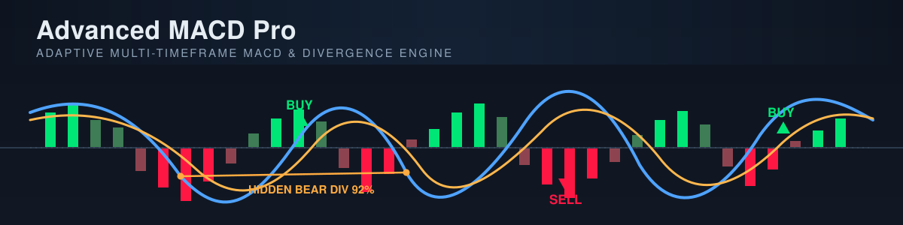
- Signal Line MA Type is its own parameter (default
SameAsMacdLine, i.e. the historic behaviour), so the coupling between the MACD kernel and the signal kernel is explicit instead of a side effect. - Stats Window is a parameter instead of a hard-coded 100 bars, and scales with the timeframe in automatic mode.
- Show Alert Popup: alerts now also reach you through the platform's popup notifications, colour-coded by direction, in addition to the log and the sound.
- Strict MTF mapping is honoured by the confluence ladder too — it no longer quotes a higher-timeframe bar that is still forming, so a registered signal's quality cannot change after a history reload.
- The adaptive ATR floor is unbiased: the volatility model corrects the EWMA plug-in variance and arms on a real sample, so the floor is no longer systematically too low.
- ATR-normalised output has no warm-up spike: the divisor falls back to the mean true range of the bars that exist instead of 1.0.
- Heikin-Ashi sources get their exact bar duration, so every derived period on those charts is now correct.
- Crossover markers survive being switched off and back on, and the back-fill after a reload is bounded and trimmed as it goes.
- The live tick is O(1) for simple-MA windows (with an exact re-derivation every 1024 steps), and the volume-price-adjusted input is memoised on unchanged ticks.
- RSI agreement is graded rather than binary, anchored so that a decisive turn still scores exactly what it used to.
- Manual mode self-checks: any value that does not survive the profile invariants verbatim is reported at start-up, so a clamp can never again disagree silently with the range the dialog declares.
- The resolved-profile log is complete: both kernels, the filter-bank spread, lambda, all four windows and the warm-up estimate — read from the resolved settings, not from the dialog.
Adaptation Mode = Automatic (the default) each of them is rescaled by the timeframe scaling law
and then clamped by wall-clock caps; the numbers actually in force are printed to the log at start-up
(Log Resolved Profile On Start) and shown in the panel's configuration section. Changing a
reference value changes the anchor of the whole curve, not one number.
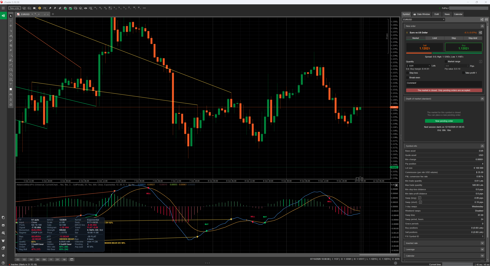
SECTION 1 — FEATURES
Everything the product is, module by module, formula by formula, parameter by parameter.
1. Introduction & Philosophy
1.1 What Advanced MACD Pro is
Advanced MACD Pro lives in its own oscillator pane under the price chart. It plots a MACD line, a signal line, a zero reference line and a histogram — the familiar four — and then does four things that the classic indicator does not do:
- It adapts. Every period and window is derived from the resolved bar duration through an explicit scaling law (§3). There is no lookup table of “M1 values” and “H4 values”: one formula, one anchor (H1), one curve. Move the indicator to another timeframe and the whole parameter set re-derives itself, including the divergence geometry, the auxiliary indicator periods, the volatility baseline and the drawing budgets.
- It reads divergences properly. Pivots are prominence-filtered fractals that publish only after their right-hand leg has closed; every admissible pairing inside the distance window is scored and the strongest one wins (not just “compare with the previous pivot”); regular and hidden families are graded A/B/C, confirmed against RSI and the histogram, pushed through eight hard gates, and given a 0–100 quality score built from thirteen weighted components (§6).
- It listens to higher timeframes. A confluence ladder of up to three higher timeframes is built, and each level gets its own fully adaptive profile — the ladder is not the primary setting re-read on a coarser series, it is what the indicator would compute if you had opened that chart yourself (§9).
- It measures itself. Every registered divergence becomes a record with an entry price taken at the
confirmation bar (never at the pivot, which would bake in look-ahead), an ATR-denominated target and stop,
and a horizon. Outcomes resolve incrementally on closed bars only, are bucketed per signal family, and the
measured win rate is fed back as one of the thirteen quality components. The counters persist in the platform's
LocalStorageper symbol and profile (§7).
1.2 The philosophy in one paragraph
collecting, or the word off. And a signal that has been
confirmed cannot move again: pivots publish after their right leg closes, outcomes latch, marker anchors are
computed from bar open times rather than from “now”, and a history reload rebuilds everything from
scratch instead of patching stale indices.
1.3 Feature summary at a glance
| Capability | What you get |
|---|---|
| Oscillator | MACD + signal + histogram + zero line, on 6 price inputs and 10 moving-average kernels, with an independent kernel choice for the signal line |
| Adaptive engine | Scaling law with microstructure-noise and horizon terms; 2 sensitivity knobs; 2 high-timeframe policies; everything re-derived on timeframe change |
| Regime filter bank | Two MACD instances straddling the nominal periods, mixed by a smoothed Kaufman Efficiency Ratio: responsive leg wins in trends, smooth leg wins in chop |
| Early entry | Signal Sensitivity Lambda advances the crossover trigger by a band measured in the oscillator's own units, with a latch that guarantees exactly one trigger per excursion |
| Divergences | Regular + hidden, A/B/C grading, zero-line rule, RSI and histogram confirmation, multi-candidate search, prominence filter, non-repainting pivots |
| Gates | Adaptive (percentile of the symbol's own ATR% distribution) or fixed volatility floor, trend/counter-trend slope, ADX, volatility spike, momentum/follow-through, cluster suppression, trading session, MTF confluence |
| Quality score | 13 weighted components, each normalised against a scale-free reference; unavailable components are dropped from numerator and denominator |
| Learning | Per-family outcome tracking in ATR units, win rate fed back into quality, persistence across sessions, honest sample-size reporting |
| Multi-timeframe | Derived or pinned ladder, per-level adaptive profiles, weighted confluence score (−100..+100), soft-penalty or hard gate, strict closed-bar mapping |
| Presentation | Fused or split info panel built from real chart controls (with a static-text fallback), 4 histogram buckets, crossover markers with 4 wordings, divergence lines/markers/labels/drop-lines, optional mirror on the price chart |
| Alerts | Log line + platform popup (colour-coded by direction) + sound, on crossovers, zero-line crosses, divergences and confluence flips; closed-bar-only mode; quality floor for divergence alerts |
| Automation | 11 output data series, chart-indexed, consumable by cBots and by other indicators |
| Transparency | Resolved profile printed at start-up, every contradiction reported, per-signal skip reasons under Debug Log, culture-neutral text everywhere |
1.4 What the implementation is built on
The source cites its references explicitly; this is what each one contributes.
| Reference | What it supplies | Where it lives in the product |
|---|---|---|
| Y. Li, Operator Analysis of MACD, arXiv:2509.21326 (2025) | MACD as a phase-corrected smoothed derivative, structurally a band-pass filter; de-lagged averages shift the pass-band without adding noise; blending two period sets forms a regime-following filter bank | The kernel library (Hull / DEMA / TEMA), and the Regime-Adaptive Filter Bank (§5.5) |
| L. Lin et al., A Volume-Price-Adjusted MACD Trading Strategy…, arXiv:2604.26063 (2026) | (a) the volume / volatility / candle-body adjusted price input; (b) the lambda early-entry rule | Price Input = VolumePriceAdjusted (§5.2) and Signal Sensitivity Lambda (§5.6). The paper applies lambda to the long side only; here it is expressed as a symmetric band in the oscillator's own units |
| P. Kaufman, Smoothing Techniques for More Accurate Signals (1995) | Efficiency Ratio | The regime weight of the filter bank, and the KAMA kernel itself |
| A. Lo, A. W. MacKinlay, Stock Market Prices Do Not Follow Random Walks (1988) | Variance-ratio / microstructure-noise argument | The (1 + ε/D) term of the scaling law (§3.3) |
| C. Brown, Technical Analysis for the Trading Professional; Murphy / Appel | A/B/C divergence grading; classic MACD divergence and zero-line rules | §6.4 (grading) and the Require Zero-Line Match gate |
1.5 What it does not do
AccessRights.None: the indicator cannot place, modify or close an order, cannot read your account or
your positions, and writes no files. The only thing it persists is its own learning counters, through the
platform's LocalStorage, under a key namespaced by symbol and resolved profile. It prints no
probability, no price target and no promise — the outcome engine reports what happened to past signals
in ATR multiples, with the sample size attached.
2. Architecture & Guarantees
2.1 Two index spaces, and why that matters
The indicator can run on a source timeframe that is not the chart timeframe (Source Timeframe).
That creates two index spaces, and confusing them is the classic source of multi-timeframe bugs:
| Space | Indexed by | What lives there |
|---|---|---|
| Source space | bars of the resolved source timeframe (_sourceBars) | Every internal series: price input, MACD, signal, histogram, scale, cross latch, pivots, divergences, outcomes, learning, alerts. All of it lives in growable SeriesBuffer arrays, not in the platform's output series |
| Chart space | bars of the chart you are looking at (Bars) | The 11 output series and every chart object's X coordinate |
Writing a source index into a chart-indexed IndicatorDataSeries is unsafe whenever the source is finer
than the chart (more source bars than chart bars) — it silently writes to the wrong bar or out of range. This
indicator therefore keeps the mathematics in its own buffers and only ever writes final, chart-indexed values
to the outputs, through the mapping functions of §2.3.
2.2 The computation pipeline, in the exact order it runs
Inside the MACD pipeline, one call to ComputeRange(from, to) performs, in this order:
- Price input — build the oscillator's source series for the range (close / typical / weighted / median / Heikin-Ashi / volume-price-adjusted, §5.2). Missing components fall back to the close so one bad bar cannot blank the oscillator for a whole window.
- Efficiency ratio — raw Kaufman ER per bar, then smoothed by an EMA over
2 × ER Periodbars. This is the regime weight. - MACD line — either one
fast/slowpair, or (with the filter bank on) the weighted blend of a responsive and a smooth pair. The blend is defined only when both legs are defined. - |MACD| and its rolling mean —
Scale, a simple MA overNormWindow = clamp(4×Slow, 40..600)bars. This is the oscillator's own yardstick. - Signal line — a moving average of the MACD line, over the resolved signal period, with the kernel
chosen by
Signal Line MA Type. - Histogram = MACD − signal; then |histogram| and its rolling mean (
HistScale), which is the unit the early-entry band and the “STRONG/NORMAL/WEAK” panel row are measured in. - Cross latch — the sequential ±1 state machine behind every crossover signal (§5.6, §8).
Then, once per chart bar, Calculate(index) runs the outer pipeline:
- reload / shrink detection → full rebuild if history changed shape (§2.6);
Sync(true)on the primary pipeline: append new source bars, re-evaluate the forming one;- rewrite the just-closed chart bar with the strict mapping (§2.3);
- map this chart bar onto the source series and write the outputs;
- crossover markers (§8);
- pivots & divergences (§6) — deliberately before the confluence / volatility / outcome updates, because the pivot scanner advances those three states itself to their canonical per-confirmation point, which is what makes a bulk history pass bitwise identical to the live pass;
- MTF confluence (§9), volatility baseline, outcome tracking (§7);
- on the last chart bar only: alerts (§11), panel refresh (§10), and arming of the alert latches at the end of the initial history pass.
2.3 Chart → source mapping
| Situation | Rule | Why |
|---|---|---|
| The forming chart bar | maps to the newest source bar | so the oscillator follows price tick by tick |
| Source finer than chart | last source bar that had closed by the end of that chart bar | a chart candle aggregates several source candles; picking the first would freeze the value |
Source coarser than chart, Strict Non-Repaint MTF Mapping = true | last source bar that had closed when the chart bar closed | the naive “bar containing the chart open” shows a higher-timeframe candle's final value on earlier chart bars — silent repainting of history |
| Source coarser, strict off | the bar containing the chart open time | responsive, at the cost of the above |
| No source bar had closed yet | returns −1 and the row is plotted empty | borrowing a still-forming bar would be look-ahead |
“Closed by T” is answered as “opened at or before T − sourceSpan”, which the platform's time series resolves in O(log n). When the cutoff lands inside a non-trading gap (weekend, session break) the lookup can round up to the next bar, so the mapper walks back to the last bar that really opened at or before the cutoff. The same rule, with the same guard, maps the higher-timeframe ladder (§9.4).
2.4 The guarantees
| Guarantee | How it is enforced |
|---|---|
| Pivots never repaint | A pivot at bar c is only evaluated once bar c + PivotLookback has closed: the scanner's right edge is min(currentSourceIndex, Count-2) - lookback. On a live tick the forming bar can never confirm a pivot, so a divergence cannot appear mid-bar and survive after the bar exceeds the “pivot” extreme |
| Entry price has no look-ahead | The outcome engine's reference is the confirmation bar (pivot + lookback), not the pivot bar: the pivot only becomes known lookback bars later |
| Outcomes latch | Each record remembers how far it has been scanned (ScannedTo) and stops at the first of target / stop / horizon. A later wick cannot un-resolve an outcome, and the total cost over the whole history is O(bars), not O(bars × horizon) |
| Deterministic anchors | Every marker is anchored on the chart bar that contains its source bar's open time, so its position is identical live, on a replay and after a reload. Nothing migrates while a bar is forming |
| Live == replay | The pivot scanner advances confluence, the volatility model and the outcome tracker to their canonical per-confirmation state before each registration, so a bulk history pass produces the same quality scores as the live pass did |
| One trigger per excursion | The crossover latch is a sequential ±1 state machine: a trigger can never be emitted twice for the same excursion, and an excursion can never pass unannounced — both impossible to guarantee from a local two-bar test once the early-entry band is wider than zero |
| Reload-safe | A history reload, symbol switch or shrink discards every index-based state (pivots, divergences, markers, learning counters, alert latches, volatility model, memo caches) and rebuilds it; output series are rewritten wholesale because historical chart bars are never visited again |
| Bounded objects | Drawn divergences, cross markers and panel controls all live inside explicit budgets (§30); the back-fill of markers is bounded by the drawn window, and trimming also runs during a long back-fill so peak memory stays flat |
| No silent misconfiguration | Contradictory parameters are reconciled to the safe side and reported at start-up: swapped fast/slow, inverted distance window, overlapping quality bands, alert bar vs quality gate, empty session window, a session calendar the symbol does not expose, a fixed ATR% ignored in adaptive mode, an unrecognised custom timeframe, and — in manual mode — any value that did not survive the profile invariants verbatim |
| Culture-neutral text | Every log line, panel cell, label, tooltip and alert is formatted with the invariant culture, so a pasted log is comparable on a comma-decimal system |
| No permissions | AccessRights.None |
2.5 What is allowed to move — honestly
“Non-repainting” is only a meaningful claim if it says what it covers. This is the complete list of things that legitimately change while a bar is forming, and everything else is final:
| Moves intrabar | Why that is correct |
|---|---|
| The MACD line, signal line and histogram of the forming bar | They follow price by design; that is what a live oscillator is for. The row is rewritten with the strict mapping the moment the chart bar closes, so stored history equals what a full recompute produces |
| The crossover marker of the forming bar | Provisional by design when Mark Only Closed Bars = false: it is re-checked on every tick and withdrawn if the cross does not survive to the close |
| The panel's live rows (price, ATR, session, bias, momentum…) | A read-out of the present moment |
Confluence, when Strict Non-Repaint MTF Mapping = false | Opt-in: the ladder then quotes the forming higher-timeframe bar. With the default true, the ladder quotes only bars that have really closed |
| Never moves | Mechanism |
|---|---|
| A confirmed pivot | published only after its right leg closed |
| A registered divergence: its line, label, colour, grade, quality, confluence, entry price | written once at registration from closed-bar state |
| A resolved outcome and its win/loss/expired tag | latched; scanning resumes from ScannedTo |
| A crossover marker on a closed bar | anchored on a bar open time, built once, back-filled in order |
| An alert already fired | per-source-index latches; the history pass cannot fire alerts at all |
2.6 History reloads, symbol switches, reconnects
The indicator subscribes to the source series' Reloaded and HistoryLoaded events (once per
series, de-duplicated by reference, because a confluence level can legitimately point at the very same series as the
primary source) and additionally compares the source bar count on every Calculate. Either trigger sets a
rebuild flag, and the next pass runs RebuildAfterHistoryChange:
- Re-derive the timeframe geometry (bar spans), because everything below maps indices through it.
- Invalidate and re-sync the primary pipeline; invalidate and re-sync every confluence level.
- Clear pivots, divergences (removing their chart objects first), cross markers, the volatility model, the deduplication slots and every alert latch — including the confluence sign latch and any deferred alert.
- Reset the learning counters. They are a statistic of the records that were just discarded; keeping them would count the same market events again on every reload and inflate the sample counts.
- Rewrite the whole output series (
RecomputeAllOutputs), because historical chart bars are never visited again byCalculate— merely clearing them would strand every marker older than the live edge. - Re-arm the history pass, so a crossover that already happened while loading cannot fire an alert afterwards.
Auto Load History = true: the indicator requests more bars in a
bounded loop (at most 12 attempts, stopping as soon as a request returns nothing) until the resolved profile's
warm-up requirement is met, so a deep reload does not leave you with a half-computed oscillator.
2.7 Cost model
| Operation | Cost | Note |
|---|---|---|
| One tick on the forming bar | O(1) per simple-MA window, O(period) per recursive/composite kernel | The rolling-sum cache remembers the source value at the cached index, so re-evaluating the same bar swaps one window member instead of re-summing; the cache is re-derived exactly every 1024 incremental steps so drift cannot accumulate |
| Volume-price-adjusted input | O(VP Window) per tick that actually moved | Memoised on every input of the forming bar, so a stream of redundant ticks costs O(1); this is the heaviest price input and the panel shows which one is active |
| Outcome tracking | O(bars) over the whole history | Incremental via ScannedTo; never rescans a resolved horizon |
| Pivot scan | O(lookback) per newly confirmable bar | Each bar is scanned once; the watermark advances |
| Marker back-fill after a reload | bounded by DrawRecentBars + 2 × MaxCrossMarkers bars | Older markers would be trimmed immediately anyway; trimming also runs inside the walk |
| Panel | throttled to Panel Refresh (ms) | and only rebuilt when dirty or on a size change |
3. Timeframe Resolution & the Adaptive Engine
3.1 How the source timeframe is resolved
Source Timeframe offers CurrentChart, twelve fixed timeframes (M1, M5, M15, M30, H1, H2, H4,
H6, H12, D1, W1, MN) and Custom. Every name is resolved through the platform's own parser
(TimeFrame.Parse) rather than a hard-coded table, so the set of usable timeframes can never drift from
what the running build of cTrader actually supports.
Custom Timeframe Name accepts, in this order of attempts:
- a canonical platform name —
Minute15,Hour4,Renko10,Range50,Tick1000… - trader shorthand —
M1…M10080,H1…H24,D1…D7,T1…T1000,W/W1,MN/MN1/MO,RENKOn,RANGEn; - Heikin-Ashi variants of any of the above —
HeikinH4,HeikinAshiMinute15…; - the literal words
current/chart, which mean “use the chart”.
Case, spaces and punctuation are ignored. A name the platform rejects falls back to the chart timeframe and is
reported: WARNING: Custom Timeframe '…' is not a timeframe this platform recognises, with the
list of valid forms. With Debug Log on, the exact reason the parser refused is printed too — useful
for telling “my spelling was wrong” from “this build has no such timeframe”.
3.2 How the bar duration is measured
The scaling law needs the bar duration in minutes. TimeFrame.Size is internal to the platform API, so the
duration is derived from the timeframe's public name, with an empirical fallback:
| Timeframe kind | Duration source |
|---|---|
| Time-based (M/H/D/W/MN), including Heikin-Ashi variants | Exact, parsed from the name: MINUTEn → n, HOURn → 60n, DAILY → 1440, DAYn → 1440n, WEEKLY → 10080, MONTHLY → 44640 (31 days, exactly the platform's own value). The full HEIKINASHI prefix is stripped before parsing, so a Heikin-Ashi chart keeps the exact duration of its base timeframe |
| Tick / Renko / Range / custom | Empirical: the median of up to 2000 recent open-time deltas (deltas ≤ 0 or ≥ 40 days discarded, fewer than 4 samples → “unknown”). The median is used untrimmed on purpose: it tolerates up to 50% contamination, weekend gaps are a handful of samples, and trimming the upper tail would bias the estimate low on a genuinely sparse series, where long deltas are real bar durations |
| Unknown | The H1 anchor (60 minutes) is assumed, and the mapping code sets a “spans unknown” flag so strict mapping degrades gracefully instead of guessing |
Source Timeframe = Hour.
3.3 The scaling law
One formula, no lookup tables. With D = source bar duration in minutes, Dref = 60 (H1),
ε = Microstructure Noise Horizon (min), δ = the horizon exponent of
Timeframe Scaling:
The two terms do different jobs. The noise term keeps the statistical reliability of the smoothed difference
constant: per-bar variance is σ²·D + σ²eps, so the number of bars
that must be averaged to reach a fixed signal-to-noise ratio grows as sqrt(1 + eps/D). The horizon
term moves the indicator between “constant bar count” (δ = 0) and “constant
wall-clock horizon” (δ = 1). The default δ = 0.15 exists because the noise term
alone under-corrects in practice on fast charts.
A period is then scaled with a per-parameter exponent, because not every parameter is horizon-driven:
ScaleBars(ref, scale, exponent, min, max, gain) computes
round(ref × scaleexponent × gain) and clamps to [min, max]. The
gain is 1 / Global Sensitivity, which is why sensitivity divides periods: 2.0 gives half
the periods (twice as fast), 0.5 doubles them, and the label agrees with the effect on every timeframe.
| Exponent | Parameters | Reasoning |
|---|---|---|
| 1.00 | Fast, Slow, Signal periods | pure horizon quantities — they follow the scale fully |
| 0.80 | Trend EMA period | a context filter: mostly horizon, partly statistical |
| 0.60 | Pivot lookback, VP window | damped on purpose. The lookback exponent is deliberately higher than the distance windows' so that the ratio MinPivotDistance / PivotLookback does not collapse on slow charts, where a bare 0.50/0.50 pair would confirm pivots after two bars and admit visibly noisier divergences |
| 0.50 | Min/Max pivot distance, trend slope bars, outcome horizon, draw-recent window, stats window (the last two use 1/scale, i.e. they grow on slower charts) | market-phenomena windows: they should stretch with the timeframe, but sub-linearly |
| 0.40 | RSI, ATR, ADX, Efficiency-Ratio periods | statistically driven; they barely need to move with the timeframe |
Two thresholds are scaled as values rather than bar counts:
The first follows the diffusion of ATR-as-a-percent-of-price with the square root of bar duration; the second keeps the slope gate statistically comparable when the number of bars it is measured over changes.
3.4 Wall-clock caps (automatic mode only)
Bar counts are the natural unit for oscillator periods, but windows that describe a market phenomenon must not
grow without bound on slow charts — a 60-bar outcome horizon on a monthly chart is five years, which no trader
will ever see resolved. Each is capped by BarsForDays(days, barMinutes, floor):
| Quantity | Cap | Floor of the cap |
|---|---|---|
| Trend EMA period | 730 days | 10 bars |
| Max pivot distance | 730 days | 20 bars |
| Min pivot distance | 180 days | 3 bars |
| Outcome horizon | 120 days | 10 bars |
| Stats window | 365 days | 25 bars |
| Draw-recent window | 1095 days | 100 bars |
3.5 Derived quantities you cannot set directly
| Quantity | Formula | Used by |
|---|---|---|
NormWindow | clamp(Slow × 4, 40, 600) | the rolling mean absolute MACD (the oscillator's yardstick) and the rolling mean absolute histogram (the early-entry unit) |
VolWindow | clamp(BarsForDays(10 days), 150, 3000) | the volatility baseline of the adaptive ATR gate — about ten trading days: long enough to average out the intraday cycle, short enough to track a regime change |
ErSmoothing | clamp(ErPeriod × 2, 5, 100) | the raw efficiency ratio is far too twitchy to drive a blend on its own |
| Filter bank legs | Responsive = round(period × (1 − spread)), Smooth = round(period × (1 + spread)), each floor-guarded so fast ≥ 2 and slow > fast | the two MACD instances of the regime-adaptive bank |
| Quality bias | clamp(0.20 × log2(60 / BarMinutes), −0.10, +0.10) applied to Min/Weak/Alert quality | fast charts are noisier, so the bar rises slightly; slow charts relax slightly. Bounded to ±10% so your own setting always dominates |
3.6 What the defaults actually resolve to
Computed with the shipped defaults (Adaptation = Automatic, Timeframe Scaling = Balanced,
ε = 1.0 min, Global Sensitivity = 1.0, High Timeframe Policy = Canonical,
Filter Bank Spread = 0.35, reference set 12/26/9). This is the same arithmetic the indicator performs at
start-up and prints to the log — reproduced here so you can see the curve rather than trust it.
| TF | min/bar | scale | MACD f/s/sig | pivot lb | dist min–max | RSI / ATR | trend EMA | slope | horizon | VP win | norm win | vol win | stats | min ATR% | Q min/weak |
|---|---|---|---|---|---|---|---|---|---|---|---|---|---|---|---|
| M1 | 1 | 2.592 | 31 / 67 / 23 | 9 | 18–161 | 20 / 20 | 107 | 8 | 97 | 35 | 268 | 3000 | 62 | 0.0065 | 55.0 / 71.5 |
| M5 | 5 | 1.577 | 19 / 41 / 14 | 7 | 14–126 | 17 / 17 | 72 | 6 | 75 | 26 | 164 | 2880 | 80 | 0.0144 | 55.0 / 71.5 |
| M15 | 15 | 1.261 | 15 / 33 / 11 | 6 | 12–112 | 15 / 15 | 60 | 6 | 67 | 23 | 132 | 960 | 89 | 0.0250 | 55.0 / 71.5 |
| M30 | 30 | 1.119 | 13 / 29 / 10 | 5 | 10–106 | 15 / 15 | 55 | 5 | 63 | 21 | 116 | 480 | 95 | 0.0354 | 55.0 / 71.5 |
| H1 | 60 | 1.000 | 12 / 26 / 9 | 5 | 10–100 | 14 / 14 | 50 | 5 | 60 | 20 | 104 | 240 | 100 | 0.0500 | 50.0 / 65.0 |
| H4 | 240 | 1.000 | 12 / 26 / 9 | 5 | 10–100 | 14 / 14 | 50 | 5 | 60 | 20 | 104 | 150 | 100 | 0.1000 | 45.0 / 58.5 |
| D1 | 1440 | 1.000 | 12 / 26 / 9 | 5 | 10–100 | 14 / 14 | 50 | 5 | 60 | 20 | 104 | 150 | 100 | 0.2449 | 45.0 / 58.5 |
| W1 | 10080 | 1.000 | 12 / 26 / 9 | 5 | 10–100 | 14 / 14 | 50 | 5 | 18 | 20 | 104 | 150 | 53 | 0.6481 | 45.0 / 58.5 |
| MN | 44640 | 1.000 | 12 / 26 / 9 | 5 | 10–24 | 14 / 14 | 24 | 5 | 10 | 20 | 104 | 150 | 25 | 1.3638 | 45.0 / 58.5 |
Canonical policy pins the scale at 1.0, so D1/W1/MN run the classic 12/26/9 —
exactly what daily and weekly traders expect and what the literature is calibrated on. Only the wall-clock caps move
(outcome horizon, stats window, draw window). Switch High Timeframe Policy to HorizonMatched
and the same charts start shrinking their periods toward a comparable wall-clock horizon, down to the 0.35
reliability floor. Below H1 the noise term does the work: M1 runs 31/67/23, not 12/26/9, because averaging 26 one-minute
bars does not deliver the same signal-to-noise ratio as averaging 26 hourly bars.
Timeframe Scaling = BarCount together with Microstructure Noise Horizon = 0 and the scale
becomes exactly 1.0 on every timeframe: you then get the reference periods verbatim everywhere, which is the useful
baseline when you want to compare this product against a plain MACD.
3.7 Invariants that hold in both modes
| Invariant | Action taken | Reported? |
|---|---|---|
Fast ≥ Slow | the pair is swapped, not flattened — widening the slow leg would hand you a 50/51 oscillator, technically valid, almost perfectly flat, and nothing like what you asked for | yes, with the resolved triple |
Slow ≤ Fast after a swap | Slow = Fast + 1 | covered by the swap warning |
| leg ceilings | Fast ≤ 500, Slow ≤ 1000, Signal ≤ 300 — identical to the MaxValue declared on each parameter, so a value the dialog accepts is never silently rewritten | yes, if exceeded |
MinPivotDistance < 2 × PivotLookback | raised to 2 × PivotLookback: two pivots closer than twice the confirmation window are usually one swing split in two | — |
MaxPivotDistance ≤ MinPivotDistance | raised to MinPivotDistance + 10 | yes, if you inverted them |
WeakQuality < MinQuality | raised to MinQuality so the two bands cannot overlap | yes |
| manual mode, any parameter | every clamp mirrors the declared range; anything that still differs is printed at start-up | yes — WARNING: X = a was resolved to b |
3.8 Manual mode
Adaptation Mode = Manual honours every dialog value verbatim, clamped only to the range the
parameter itself declares. Nothing is scaled, no wall-clock cap applies, and the quality thresholds are taken as
written (the scale-free bias of §3.5 is an automatic-mode feature). The derived quantities of §3.5 are still
derived — they are not parameters — and the invariants of §3.7 still hold, because they protect against
configurations that cannot mean what they say.
4. Trading Styles
Trading Style is the master switch and sits first in the dialog on purpose. It is the orthogonal axis to
timeframe: it sets everything a timeframe cannot tell the engine, and it deliberately does not touch the timeframe.
That is what makes one style work on M1 and on H1 alike — the adaptive engine keeps doing its job underneath.
4.1 Universal (default)
Writes nothing. Every parameter is whatever you set, and the start-up note about a style being active is not printed.
4.2 Scalping
Writes 95 of the 133 parameters, in one pass, before anything is resolved. The design intent, group by group:
| Group | What the style decides |
|---|---|
| Adaptation | Automatic + BarCount scaling (shortest bar counts) + HorizonMatched high-timeframe policy + Global Sensitivity 1.6 (periods ÷ 1.6) + noise horizon 1.0 min + filter bank on with spread 0.30 |
| Source | strict MTF mapping, auto history load, Min Source Bars 1500. The timeframe itself is never touched — that is the point of the style |
| Confluence | on, 2 levels, derived ladder, soft gate centred above neutral (Min Confluence Score 60): a scalp against the higher timeframe is still allowed but must earn a materially higher quality score |
| Oscillator | Hull kernel (zero group delay) on the volume-price-adjusted input with a 12-bar reference window, signal line following the MACD kernel (keeping the crossover symmetric — an EMA signal under a Hull MACD would put half the signal period of lag straight back in), Lambda 0.92 so the trigger fires while the histogram is still closing the last 8% of its distance to zero, raw output scale |
| Divergences | regular + hidden, prominence 0.55 ATR (many pivots, few of them noise), price leg ≥ 1.0 ATR, oscillator leg ≥ 0.18 RMS, up to 10 candidates searched, zero-line rule and both confirmations armed, up to 30 drawn |
| Gates | every precision gate armed: trend filter with a 0.12 ATR/bar counter-trend limit, adaptive ATR floor at the 25th percentile of the symbol's own distribution, ADX ≥ 18, volatility-spike, momentum, cluster suppression, post-pivot follow-through ≥ 0.55 (the turn must actually be underway), session from the symbol's own calendar with a 07–20 UTC fallback window |
| Quality | floor 60, weak below 72, alerts from 76 — a higher bar than Universal, because a scalping hold is short enough that a marginal signal costs the same spread as a good one |
| Learning | on, 200-outcome memory, armed after 10 resolved samples, persisted, target 1.0 ATR against a 1.2 ATR stop — a scalping hold time, not a swing one |
| Markers | crossovers drawn as arrow + text (BUY/SELL), 9px, 0.9× oscillator-scale clearance, live (not closed-bar-only, because scalpers act inside the bar), zero-line crosses off, 150-marker budget |
| Appearance | divergences as line + markers with quality in the label and no grade, no drop lines (keep a busy fast pane readable), no mirror on the price chart, 2px lines |
| Panel | one fused card, left/bottom, native controls, 11px, 0.92 opacity, 6px margin, 200 ms refresh, configuration section off (the configuration is the style) |
| Alerts | all on except zero-line crosses; closed-bar-only off; sound, log and popup all enabled |
Trading Style = Scalping, editing any of those 95 parameters has no effect: the preset
rewrites them on every initialisation. This is printed at start-up
(“individual parameter values shown in the dialog are the ones the 'SCALPING' style wrote”).
To fine-tune, set the style back to Universal first — the values the style wrote stay in the dialog,
so you keep its choices as your starting point.
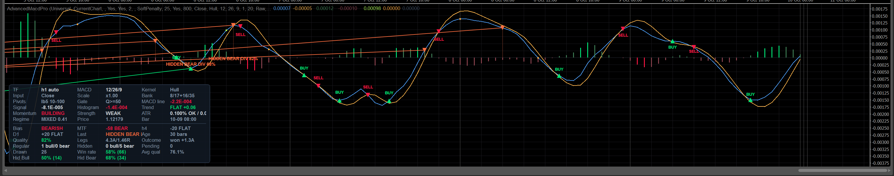
5. The MACD Core
5.1 Structure
The core is a single self-contained class instantiated once for the source timeframe and once per confluence level, so the indicator behaves identically on every timeframe — each instance with its own automatically derived profile. Every kernel in it is a strictly causal recursion: the value at index i depends only on inputs at ≤ i and on already-computed outputs at < i. That property is what makes an exact incremental update possible, so re-evaluating the forming bar on every tick reproduces exactly what a full recomputation would produce — no drift, no O(history) rescan.
5.2 Price inputs
Price Input | Formula | Character / when to use it |
|---|---|---|
| Close (default) | C | The classic. Comparable to any other MACD you have used |
| Typical | (H + L + C) / 3 | damps single-tick wicks; a reasonable default on noisy feeds |
| Weighted | (H + L + 2C) / 4 | typical, tilted toward the close |
| Median | (H + L) / 2 | ignores where inside the bar the market closed; smoothest, most lagging |
| HeikinAshi | (O + H + L + C) / 4 — or plain C when the source timeframe is already Heikin-Ashi | trend-continuation view. The double-transform guard matters: transforming Heikin-Ashi candles again would compound the smoothing into mush |
| VolumePriceAdjusted | see below | the VP-MACD input of arXiv:2604.26063. Best on fast timeframes where the dominant failure is a low-participation wick faking a crossover |
The volume-price-adjusted input, step by step:
This is the scale-preserving form of the paper's idea: σ and the body ratio are normalised against their own rolling means and used as conviction weights, not as multiplicative price factors. The adjusted series therefore stays in price units and the resulting MACD remains directly comparable to the classic one — which matters, because every threshold in the divergence engine is denominated in ATR or in the oscillator's own RMS. Robustness details: a bar with no usable price contributes nothing rather than poisoning the average; volume that is missing, zero or negative is folded onto the neutral 1.0; and the whole scan is memoised on the forming bar's inputs, so a stream of ticks that change nothing costs O(1).
VolumePriceAdjusted is the heaviest input: its window scan cannot be reduced to O(1) per tick, because both
conviction factors are ratios against rolling means that move with the forming bar. On a deep history the
difference is measurable; on a live chart the memo absorbs most of it. The panel's Input row always tells
you which one is active.
5.3 The kernel library
Ten moving-average kernels, each implemented from its definition (composite kernels are compositions of primitive ones,
which keeps them provably consistent). “Warm-up” is the number of bars before the first non-NaN output —
the same quantity EstimateWarmupBars uses to warn you about insufficient history.
| Kernel | Definition | Warm-up | Character |
|---|---|---|---|
| Exponential (default) | EMA_i = EMA_{i-1} + α(x_i − EMA_{i-1}), α = 2/(n+1), seeded with the SMA of the first window | n | the classic Appel MACD. Smooth, predictable, one well-understood lag |
| Hull | HMA(n) = WMA( 2·WMA(n/2) − WMA(n), round(sqrt(n)) ) | n + round(sqrt(n)) | zero group delay with minimal overshoot — the fastest usable kernel. Degenerate periods stay well defined (HMA(2) = (4P_i − P_{i-1})/3) |
| KaufmanAdaptive | KAMA: ER = |x_i − x_{i-n}| / Σ|Δx|, SC = (ER·(2/3 − 2/31) + 2/31)², then KAMA_i = KAMA_{i-1} + SC(x_i − KAMA_{i-1}) | n + 1 | fast in trends, nearly flat in chop. Needs one extra bar because ER needs n changes |
| DoubleExponential | DEMA = 2·EMA(n) − EMA(EMA(n), n) | 2n | one de-lag stage; less overshoot than Hull |
| TripleExponential | TEMA = 3E1 − 3E2 + E3 over three cascaded EMAs of period n | 3n | two de-lag stages; the most aggressive of the exponential family |
| TimeSeries | least-squares straight line through the last n samples, evaluated at the newest one | n | the platform's “Time Series” MA. Reacts to slope rather than level; can overshoot on spikes |
| Weighted | linearly weighted mean, weights n…1 | n | less lag than SMA, more noise than EMA |
| Triangular | TRIMA(n) = SMA( SMA(x, n/2+1), n/2+1 ) | 2·(n/2+1) | double-smoothed: very quiet, visibly late. Useful as the smooth leg of a filter bank |
| Simple | arithmetic mean of n bars | n | no weighting; the reference against which the others are judged |
| Wilder | RMA: α = 1/n | n | Wilder's own smoothing (RSI/ATR family). Slower than EMA at the same period, so a 26-period Wilder leg behaves like a longer EMA |
Two implementation details worth knowing, because they are the difference between an indicator that survives a bad bar and one that goes blank:
- Missing components are substituted, not propagated. Every price component is read through a guard that replaces NaN/∞ with the close, so one broken bar cannot blank a window-kernel oscillator for n bars (and cannot freeze a recursive kernel at a stale level, which is the quieter and worse failure).
- A NaN inside a window aborts that bar rather than being skipped: an efficiency ratio or a weighted mean computed over a truncated path is not a slightly-wrong number, it is a wrong number in the direction of “more confident”.
5.4 The signal line's own kernel
The signal line is a moving average of the MACD line, and its kernel is a separate choice
(Signal Line MA Type):
| Choice | Effect |
|---|---|
| SameAsMacdLine (default) | the historic behaviour: the signal line uses whatever kernel the two MACD legs use. Keeps the crossover symmetric — both sides of the difference have the same phase — which is what a zero-lag kernel wants |
| Exponential | the classic Appel definition (signal = EMA of MACD) regardless of the legs. Pairing it with a de-lagged MACD line makes crossovers later but smoother, because the signal lags by roughly (n−1)/2 bars while the MACD line does not |
| any other kernel | an explicit asymmetry you chose; the resolved pair is printed in the log and shown in the panel (SigKernel row) whenever the two differ |
5.5 The regime-adaptive filter bank
With Regime-Adaptive Filter Bank = true (default) and a non-zero Filter Bank Spread (default
0.35), the MACD line is not one oscillator but a bank of two, mixed by the market's own regime:
w → 1 means an efficient, trending regime, where the responsive leg should dominate; w → 0
means chop, where the smooth leg suppresses the whipsaw. The raw ER is far too twitchy to drive this on its own, which is
why it is smoothed over 2 × ER Period bars (a derived quantity, §3.5).
spread × Slow bars, ~18 at the defaults), which the warm-up warning
already accounts for because it counts the deeper leg.
The confluence ladder runs with the bank off at every level, by design: the ladder reports direction, not responsiveness, and a regime-mixed score would be hard to compare across timeframes.
5.6 Signal Sensitivity Lambda and the crossover latch
Signal Sensitivity Lambda ∈ [0.80, 1.00] controls how early a crossover is announced. At
λ = 1 (default) the band collapses to zero and the latch reproduces the classic crossing exactly.
Below 1, the trigger is advanced to the bar on which the histogram climbs out of the band on its way to a crossing:
The unit matters. Measuring the band in the oscillator's own mean absolute histogram is what makes λ mean the same
thing on M1 and on W1, on EURUSD and on Bitcoin: λ = 0.92 always means “trigger once the
histogram has closed 8% of its typical distance to zero”. This is also why λ is deliberately not part
of the adaptive profile — scaling it on top of an already scale-free quantity would adapt it twice.
Two rules keep the advance honest:
- Direction. An early trigger may only fire in the direction the histogram is leaving, never the one it currently occupies — otherwise the latch would flip back on the next bar and emit BUY/BUY or SELL/SELL pairs out of pure noise inside the band.
- Consumption. An early trigger is consumed by the crossing it anticipated, so the crossing itself does not emit a second one.
The result is exactly one trigger per oscillator excursion. That cannot be guaranteed by a local two-bar test once the band is wider than zero: the bullish band edge (−band) then sits below the bearish one (+band), so the two conditions overlap and a difference that dwells inside the band and then crosses zero satisfies neither. The latch is a strict causal recursion, so re-evaluating the forming bar reproduces exactly what a full recomputation would produce.
Three further details of the latch, each of which prevents a specific class of phantom signal:
- Numerical noise floor. Differences within
1e-12 × |price|are snapped to exact zero. On a dead-flat tape the two MA chains accumulate independent rounding error and the histogram jitters around zero by a few ulps; without the floor, strict inequalities would fabricate crossovers — phantom markers and alerts on a completely flat market. The floor is derived from the price scale, never from an absolute constant, so it behaves identically on an instrument quoted at 1e-6 and one quoted at 1e6. It deliberately has no absolute component: an absolute 1e-9 floor is larger than the entire histogram of any instrument quoted below ~1e-3, and would silence the indicator permanently on crypto crosses, spread and rate instruments. - Hysteresis at exactly zero. A bar that lands on zero inherits the previous side, so a flat tape cannot fabricate crossings.
- First bar with a histogram adopts the side the oscillator is already on and emits no trigger: there is no previous state to have moved away from.
5.7 Output scale and gain
Output Scale chooses the units the plotted series is expressed in; Output Gain (0.05–50)
is a plain multiplier applied on top. Every plotted value — MACD, signal, all four histogram buckets, both trigger
series and both divergence series — goes through the same conversion, so the pane stays self-consistent.
| Mode | Divisor | What it is for |
|---|---|---|
| Raw (default) | 1 | price units. Directly comparable to any other MACD; the natural choice when you read the histogram against price levels |
| AtrNormalized | ATR of that bar — and, while the platform ATR is still warming up, the mean true range of the bars that do exist | volatility-normalised. Makes one symbol's oscillator comparable to another's, and stops a volatility regime change from looking like a momentum change. The warm-up fallback exists so the left edge of the pane is not plotted in raw units next to bars plotted in ATR units (a factor of ~104 on FX: a spike that flattens into the real series with a visible step) |
| SelfNormalized | the rolling mean absolute MACD of that bar (Scale) | self-normalised: the oscillator measures itself against its own recent magnitude, so “big” means “big for this instrument recently” |
Raw
mode (the default) both divisors are 1 and the distinction disappears.
5.8 The four histogram buckets
The histogram is not one series but four, so that momentum quality is visible as colour rather than as a number you have
to compute in your head. A bar is strong when the histogram is both expanding
(|H_i| > |H_{i-1}|) and at or above its own average size (|H_i| ≥ HistScale_i):
| Bucket | Condition | Default colour |
|---|---|---|
| Hist Bull Strong | H ≥ 0 and strong | bright green #00E676 |
| Hist Bull Weak | H ≥ 0, not strong | muted green #3E7D55 |
| Hist Bear Strong | H < 0 and strong | bright red #FF1744 |
| Hist Bear Weak | H < 0, not strong | muted red #8E4450 |
All four buckets are cleared before every write, so a live bar whose classification flips between ticks can never leave
two buckets populated for the same bar. The panel's Momentum (BUILDING / FADING / STEADY) and
Strength (STRONG / NORMAL / WEAK) rows are the same two tests, spelled out.
6. The Divergence Engine
6.1 The path from a bar to a drawn signal
- Confirm a pivot. Every source bar that has just become confirmable is tested for a significant fractal pivot (§6.2). “Confirmable” means its right-hand window consists only of closed bars.
- Search the pool. The new pivot is paired against every older pivot of the same side inside
[MinPivotDistance, MaxPivotDistance], up toMax Pivot Candidatespairings, and each pairing is scored. The strongest one wins — this is the single largest accuracy improvement available to a pivot-based detector, because divergences that span an intermediate pivot are no longer missed (§6.3). - Classify and grade. Regular or hidden, bullish or bearish, A/B/C, with the zero-line rule and the two confirmations applied on the way (§6.4–6.5).
- Run the hard gates at the confirmation bar (§6.6). A rejection is logged with its reason when
Debug Logis on. - Score the quality — thirteen weighted components, 0–100 (§6.7). Below
Min Quality Scorethe candidate is dropped and the drop is logged. - Register an immutable record, claim the de-duplication slot, draw it if it is inside the drawing window, place the trigger marker at the confirmation bar, mark the panel dirty and raise the alert if the quality clears the alert bar (§6.8).
- Track the outcome on closed bars only, and feed the family's win rate back into future quality scores (§7).
c registers on the first tick of source bar c + lookback + 1, at which moment
confluence reflects bar c + lookback + 1, the volatility model has consumed bar c + lookback
and the outcomes have resolved up to c + lookback − 1. A bulk history pass confirms several pivots in
one call, so without this per-confirmation advance every registration would read end-of-batch state instead — and
quality scores, therefore which divergences pass at all, would differ between the live pass and any recompute.
With it, the two are identical. The calls are watermark-guarded, so the total cost is unchanged.
6.2 Pivot detection
A pivot at bar c is a fractal extremum over Pivot Lookback bars on each side, filtered by prominence.
| Test | Rule | Why |
|---|---|---|
| Confirmation window | published only once bar c + lookback has closed; the scanner's right edge is min(currentSourceIndex, Count−2) − lookback | the anti-repaint contract. A pivot confirmed with the forming bar could appear mid-bar and survive after that bar exceeded the “pivot” extreme — the exact repaint the design forbids |
| Extremum, left side | no bar in [c−lookback, c−1] strictly beyond the centre | ties on the left are tolerated |
| Extremum, right side | no bar in [c+1, c+lookback] at or beyond the centre | ties on the right are not tolerated, which resolves a plateau to exactly one pivot instead of emitting a duplicate for every equal bar |
| Prominence | high: extreme − max(deepest trough left, deepest trough right); low: min(highest peak left, highest peak right) − extreme; must be > 0 and, when ATR is known, ≥ Pivot Prominence (x ATR) | the ZigZag-style significance test. This is what removes the micro-pivots responsible for most false divergences on fast timeframes |
| Oscillator available | the MACD value at the pivot must not be NaN | a pivot inside the warm-up window has nothing to diverge from |
| NaN in either window | the pivot is not evaluated | a truncated window is not a slightly-wrong extremum, it is a wrong one |
Each pivot record carries its index, open time, extreme price, MACD, histogram, RSI and prominence in ATR units. Confirmed pivots are kept per side in a pool whose capacity follows the resolved profile:
It must comfortably exceed the maximum pivot separation, otherwise the multi-candidate search would silently lose its oldest candidates — which is why it is derived rather than a fixed constant.
ATR for prominence comes from the platform's own ATR indicator on the source series; while that is still
warming up, the mean true range of the bars that do exist is used instead, so pivots found early are still measurable
rather than being silently skipped.
6.3 Multi-candidate search and the pairing score
The pool is walked from the newest pivot backwards. A pairing is skipped when the distance is below
MinPivotDistance; the walk stops when it exceeds MaxPivotDistance; at most
Max Pivot Candidates pairings are evaluated. Every surviving pairing is assessed, and the one with the
highest Score is taken forward. The score is a weighted sum, deliberately not normalised (it only ever
compares candidates against each other):
DistanceFit is a trapezoidal membership function of the pivot separation — very tight pairs are
usually one swing split in two, very wide pairs lose causal connection:
The confirmation bar of a candidate is min(pivot + PivotLookback, lastSourceBar) — the first bar on
which the pivot could have been known. Everything below (gates, quality, entry price, alerts) is evaluated at that
bar, never at the pivot.
6.4 Regular, hidden, and the A/B/C grade
A low pivot always produces a bullish signal and a high pivot a bearish one — for regular (reversal) and hidden (continuation) families alike. What differs is which leg moved against which:
| Pivot | Price | Oscillator | Class | Meaning |
|---|---|---|---|---|
| High | higher high | lower oscillator high | Regular bearish | the rally is not being confirmed by momentum — exhaustion |
| High | lower high | higher oscillator high | Hidden bearish | momentum is stronger than the shallow price pullback suggests — continuation down |
| Low | lower low | higher oscillator low | Regular bullish | the sell-off is not being confirmed by momentum — exhaustion |
| Low | higher low | lower oscillator low | Hidden bullish | momentum is weaker than the shallow bounce suggests — continuation up |
Divergence Kinds selects which families are allowed (RegularOnly, HiddenOnly,
both by default).
The zero-line rule (Appel / Brown): with Require Zero-Line Match on, a regular bearish divergence must
be built entirely above zero and a regular bullish one entirely below zero. Hidden divergences are exempt — the rule
is about exhaustion at an extreme, and a continuation pattern is not one. The depth inside the correct zone is measured
as ZoneDepth (in units of the oscillator's own scale, clamped to 0…3) and contributes to the quality
score.
The grade separates genuine momentum exhaustion from a shallow diagonal:
6.5 The two confirmations
| Confirmation | Applies to | Behaviour |
|---|---|---|
RSI (Confirm With RSI, on by default) | regular divergences only — a hidden divergence is a continuation pattern and RSI usually moves with price there | Two jobs, kept separate. (1) When the switch is on it is a hard veto: a regular divergence whose RSI does not move in the signal's direction is rejected outright. (2) The agreement is additionally graded, always, whether or not the veto is armed: RsiStrength = 0.75 + 0.25·min(|ΔRSI|/10, 1) when it agrees, 0.25·(1 − min(|ΔRSI|/10,1)) when it does not. A decisive 10-point RSI turn scores exactly 1.0; a hair's-breadth tick scores 0.75. A binary flag would make the quality component a constant, because the veto has already removed every disagreement before the score is computed |
Histogram (Confirm With Histogram, on by default) | both families | A quality factor, never a veto: the histogram also contains the signal line and can legitimately lag. Agrees → +0.6 in the pairing score and 1.0 in the quality component; disagrees → 0 and 0.25; unknown → 0.3 and dropped from the score |
6.6 The hard gates, in the order they run
| # | Gate | Rule | Rejected with (Debug Log) |
|---|---|---|---|
| 1 | Duplicate suppression | one signal per end pivot per family (4 slots: high/low × regular/hidden). The slot is claimed only on registration, so a candidate rejected by a later gate never blocks a better candidate on the same pivot | duplicate end pivot |
| 2 | Volatility floor | ATR as a percent of price at the confirmation bar must be ≥ the floor in force — the adaptive percentile of this symbol's own distribution, or the fixed reference value scaled by sqrt(barMinutes/60). AtrGateMode = Off disables it | ATR% x below floor y |
| 3 | Trend | slope of the trend EMA in ATR-per-bar units over Trend Slope Bars. Hidden (continuation): must not fight the trend — rejected when aligned < −limit. Regular (reversal): expected to appear against the trend, so only a parabolic move is treated as un-fadeable — rejected when aligned < −3×limit | hidden vs trend (x) / trend too strong to fade (x) |
| 4 | ADX | only when Use ADX Filter is on. Hidden: needs a trend — ADX ≥ Min ADX. Regular: needs exhaustion — ADX falling over the slope window, or ADX ≤ Min ADX + 15 | ADX gate (x) |
| 5 | Cluster / repeat | rejected when an earlier divergence of the same direction ended within MinPivotDistance bars and its end price is within 1 ATR of the current close — i.e. this is the same event, re-detected one pivot later | clustered with a previous signal |
| 6 | Follow-through | only when Require Post-Pivot Follow-Through is on: the fraction of the post-pivot range already retraced in the signal's direction must be ≥ Min Follow-Through | follow-through x < y |
| 7 | Trading session | the confirmation bar's open time (UTC) must be inside the session — the symbol's own calendar in Auto, or the explicit UTC hour window in ManualUtc | outside the trading session (… UTC) |
| 8 | MTF hard gate | only with Confluence Gate = HardGate: the direction-aligned confluence score must be ≥ 2·MinConfluenceScore − 100 | MTF gate (x) |
FollowThrough = (close − lowest low) / (highest high − lowest low) over
[pivot, confirmation] for a bullish signal (mirrored for bearish), clamped to 0…1. A confirmed pivot
is by construction the extreme of its window, so “is the close above the pivot low?” is always true
and would filter nothing at all. 0 means price is still sitting at the extreme, 1 means it has retraced the whole
post-pivot range. The measure is scale-free, so one threshold works on M1 and on D1. When it cannot be measured (no
range, missing bar) it returns the neutral 0.5 rather than guessing.
6.7 The quality score
A weighted, bounded 0–100 score. Every component is normalised against a scale-free reference (ATR for price,
the rolling mean absolute MACD for the oscillator), so the score means the same thing on EURUSD M1 and on XAUUSD Weekly.
Components that cannot be evaluated are dropped from both the numerator and the denominator rather than being
replaced by a neutral value, so an unavailable input can never inflate or deflate the result:
quality = 100 × Σ(w·v) / Σw over the available components.
| # | Component | Weight | Value (all clamped to 0…1) | Available when |
|---|---|---|---|---|
| 1 | Oscillator disagreement | 0.18 | min(oscLegRms, 1.2) / 1.2 | always |
| 2 | Size of the price leg | 0.10 | min(priceLegAtr, 4) / 4 | always |
| 3 | Pivot formation | 0.09 | min(mean prominence in ATR, 2) / 2 | always |
| 4 | Pivot separation | 0.07 | DistanceFit(distance) | always |
| 5 | Zero-zone depth | 0.06 | min(zoneDepth, 1.5) / 1.5 | always |
| 6 | RSI agreement, graded | 0.07 | RsiStrength (§6.5) | regular divergence with RSI readable at both pivots |
| 7 | Histogram agreement | 0.07 | 1.0 agrees / 0.25 disagrees | histogram readable at both pivots |
| 8 | A/B/C grade | 0.10 | 1.0 / 0.65 / 0.35 | always |
| 9 | Trend alignment | 0.09 | hidden: 0.5 + aligned/(2·limit); regular: 0.5 + aligned/(6·limit) | Use Trend Filter |
| 10 | Post-pivot follow-through | 0.06 | the retraced fraction above | Use Momentum Filter |
| 11 | Volatility regime | 0.05 | 0.25 spike (mean bar range > 1.8·ATR) / 0.60 dead tape (< 0.45·ATR) / 1.0 normal | Use Volatility Spike Filter |
| 12 | MTF confluence | 0.08 | hard/soft-aware mapping of the aligned confluence score (§9.5) | confluence on and at least one level available |
| 13 | This family's realised win rate | 0.08 | the bucket's win rate | Adaptive Learning and at least Min Learning Samples resolved outcomes |
aligned ≥ 0) and falls toward the parabolic extreme the hard gate rejects — the
denominator is 6·limit, deliberately gentle. For a continuation pattern the trend should be
behind it, so the denominator is 2·limit: a hidden divergence fighting the trend is penalised hard.
An earlier version had this sign flipped, which awarded maximum quality to the steepest falling-knife context.
Two thresholds act on the score: below Min Quality Score the candidate is dropped entirely; below
Weak Signal Threshold it is drawn in the weak colour (amber by default) instead of its family colour.
Alert Min Quality is a third, higher bar that only gates alerts (§11). In automatic mode all three carry
the ±10% timeframe bias of §3.5.
6.8 What a registered divergence remembers
| Field | Content |
|---|---|
| Identity | serial id, object-name prefix (namespaced by indicator instance, so two copies on one chart never fight over the same object names), family (bull/bear × regular/hidden), grade |
| Geometry | start/end source indices and chart indices, start/end times, start/end price, start/end MACD, start/end display values, pivot distance |
| Assessment | quality, the confluence score in force at registration, price leg in ATR, oscillator leg in RMS |
| Trade reference | entry price = close of the confirmation bar, entry ATR (platform ATR, or the mean-true-range fallback while it warms up), the outcome state, best and worst excursion in ATR units, and ScannedTo — how far the outcome scan has already run |
| Drawing | the list of indicator-area object names and price-chart object names it owns, so cleanup can never leak a name |
A pivot that predates the loaded chart history cannot be anchored, so its chart index stays −1. The record is still registered — outcomes, learning, the panel census and the alert all key off source indices — and drawing simply refuses to paint anything with a negative anchor. Dropping the record instead would silently delete those signals too. (An earlier version clamped the index to 0, which drew the divergence from the very first bar of the chart: a line spanning the whole pane, anchored on a bar that has nothing to do with the signal, and impossible to distinguish from a real one.)
6.9 Drawing
| Element | Details |
|---|---|
| Oscillator line | a trend line between the two plotted extremes, in the family colour (or the weak colour), with Line Thickness and Line Style; the hover tooltip carries the full description |
| Markers | Bullish / Bearish Marker Icon (up/down triangle by default) at both ends |
| Drop lines | optional dotted verticals from each end down to the zero axis — they make the oscillator legs directly comparable |
| Label | placed at the chart bar halfway along the line, nudged toward zero by min(LabelOffset, 25% of the visible band) and clamped inside it. Nudging away from zero put labels outside the auto-rescaled range on exactly the divergences with the deepest legs: the object existed (tooltip and object list worked) but nothing was ever painted |
| Label wording | Plain: HIDDEN BEAR DIV 92% / BULL DIV 78%. Compact: HidBear 92% / RegBull 78%. Full: HIDDEN BEARISH DIVERGENCE - GRADE A - QUALITY 92%. Grade and quality are separately switchable |
| Mirror on the price chart | optional: the same line drawn between the two price extremes on the chart itself (visible in the top pane of the overview screenshot) |
| Layering | Object Z-Index is clamped to 0…98 for the line; labels sit at +1 and crossover markers at +2, so the intended paint order survives the platform's own clamp to 0…100 |
| Budgets | at most Max Drawn Divergences are on the chart (the newest win, older ones lose their objects but keep their records); only divergences ending within Draw Only Most Recent N Bars are drawn at all; the record list itself is capped at max(MaxDivergences, LearningMemory) + 64, because the learner needs the outcomes of the last LearningMemory signals |
7. Outcomes & Adaptive Learning
7.1 What is measured
Every registered divergence becomes a measured trade hypothesis, denominated in ATR so that one set of numbers means the same thing on every instrument and timeframe:
- Intrabar extremes, not closes. A target touched by a wick counts as touched, because that is what a real limit order would have done.
- Closed bars only. The scan runs to
currentSourceIndex − 1; the forming bar is never evidence. - Latched and incremental. Each record remembers
ScannedTo, so the total cost over the whole history is O(bars) instead of O(bars × horizon), and a later wick can never un-resolve an outcome. - Target wins ties. When a single bar touches both levels, the favourable one is credited if it is at least as large — the optimistic reading, stated here rather than buried.
- Unmeasurable records are marked expired (no ATR, no entry price) rather than being left pending forever or being counted as a win.
- The scan is skipped entirely unless a new source bar has closed since the last one, so a chart finer than the source pays nothing per tick.
7.2 The four buckets
Outcomes are accumulated per signal family, because a regular bullish divergence and a hidden bearish one are not the same hypothesis and should not share a track record:
| Bucket | Panel name | Population |
|---|---|---|
| 0 | Reg Bull | regular bullish |
| 1 | Reg Bear | regular bearish |
| 2 | Hid Bull | hidden bullish |
| 3 | Hid Bear | hidden bearish |
Each bucket stores wins, losses and expired counts; the win rate is wins / (wins + losses) — expired
signals are neither wins nor losses, they are signals that did not resolve, and folding them into either side would invent
a result.
7.3 How it feeds back
When Adaptive Learning is on and a bucket has at least Min Learning Samples resolved outcomes,
that bucket's win rate enters the quality score as component 13 with weight 0.08 (§6.7). Below that sample count the
component is dropped from numerator and denominator, not replaced by 0.5: a track record of two trades is not
evidence, and treating it as neutral-but-counted would let a lucky pair drag every subsequent score.
7.4 Persistence
| Aspect | Behaviour |
|---|---|
| Store | the platform's LocalStorage, scope Type |
| Key | AMP|<symbol>|<resolved profile label> — per symbol and per timeframe, so M1 statistics never contaminate H4 |
| Format | wins,losses,expired;wins,losses,expired;… (four groups, invariant culture) |
| When written | throttled after outcomes change, and once more on OnDestroy |
| When read | at initialisation, after the profile is resolved; a restore is reported under Debug Log |
| Failure | LocalStorage may be unavailable (first run, sandboxed profile) — persistence is wrapped so it can never break the indicator |
| History reload | counters are reset. They are a statistic of the records that were just discarded; keeping them would count the same market events again on every deeper download, symbol switch or reconnect, inflating the sample counts and skewing the win rate toward reload-time events |
Adaptive Learning = false removes component 13 entirely and stops the outcome scan (the panel still shows
what it can). This is the right choice when you are comparing configurations, because it makes the detector a pure
function of parameters and data.
8. Crossover Signals & Markers
8.1 What a crossover signal is
A trigger is the transition of the latch described in §5.6: +1 on a bullish flip,
−1 on a bearish one, read from the sequential state machine rather than from a two-bar comparison.
DetectSignalCross(s) answers whether the latch flipped at source bar s. With
λ = 1 this is exactly the classic MACD/signal crossing; below 1 it is the advanced trigger.
A separate detector watches the zero line (DetectZeroCross), with the same noise floor and the same
hysteresis at exactly zero, so a flat tape cannot fabricate zero crosses out of ulps. Zero-line markers and zero-line
alerts are both off by default.
8.2 What gets drawn
Marker Style | Result |
|---|---|
| TextAndArrow (default) | a triangle icon anchored on the crossing point plus a plain-language label placed clear of the histogram |
| TextOnly / ArrowOnly | one of the two |
| None | nothing; the crossover still drives the outputs and the alerts |
Marker Wording | Bullish | Bearish |
|---|---|---|
| BuySell (default) | BUY | SELL |
| LongShort | LONG | SHORT |
| TurnUpDown | TURN UP | TURN DOWN |
| BullishBearish | BULLISH | BEARISH |
Zero-line crosses use the neutral wording ABOVE 0 / BELOW 0 so they can never be mistaken
for a crossover signal. The hover tooltip of every marker carries the full detail: signal kind (and the λ in force
when the band is open), the MTF confluence score, the oscillator / signal / histogram values and the source bar's UTC
timestamp.
Label placement is not a fixed offset. Clearance is computed in the oscillator's own units (the rolling mean absolute
histogram, falling back to the mean absolute MACD and then to |MACD| itself), multiplied by
Marker Label Offset, converted into whatever scale the outputs are plotted in, then limited to 40% of the
visible band and stepped toward the zero axis. Stepping toward zero is guaranteed to stay inside the band the pane
displays; a “bullish up / bearish down” rule collapses onto the marker point whenever the cross sits on the
same side of zero as its direction — the common case in trends — where the label ends up painted on the arrow
inside a same-colour histogram cluster and reads as a missing label.
8.3 Bookkeeping rules
- Keyed by source index, so a cross can never be marked twice and can never be missed when several chart bars share one source bar.
- Deterministic anchor: the marker always sits on the chart bar that contains its source bar's open time — identical live, on a replay and after a reload. Anchoring the forming bar to the “current” chart bar instead made the position depend on when the cross first became visible intrabar: a replay and the live pass disagreed about the newest marker, and on charts finer than the source the marker slid rightwards while the bar formed.
- Closed bars are back-filled exactly once, in order, and the back-fill is bounded by
DrawRecentBars + 2 × MaxCrossMarkersbars — anything older would be trimmed immediately anyway, and on a deep history an unbounded walk meant a multi-second stall with every object alive at once. Trimming also runs during the walk, so peak memory stays flat. - The forming bar is provisional: re-evaluated on every tick, and its marker is withdrawn if the cross does not survive to the close.
- Bounded by count (
Max Cross Markers) and by the recent-history window. - Switching the markers off does not lose history: the back-fill watermark is parked at “nothing built”, so turning them back on rebuilds the visible window instead of waiting for a history reload.
- After a reload everything is rebuilt from scratch, so markers can never be stranded or lost.
8.4 The trigger outputs
Bull Trigger and Bear Trigger are plotted at the MACD value of the triggering bar, so the dot
sits exactly on the oscillator, and they are exposed as outputs so cBots can consume them (§12).
9. Multi-Timeframe Confluence Ladder
9.1 How the ladder is built
Two ways, and an explicit list always wins:
| Mode | Behaviour |
|---|---|
Derived (Confluence Timeframes empty, default) | the standard ladder M1, M2, M3, M5, M10, M15, M30, H1, H2, H3, H4, H6, H12, D1, D2, D3, W1, MN is walked from the resolved source timeframe upwards, and the first Confluence Levels (1–3) entries are used. Each level is resolved through the platform's own parser, so a timeframe your build does not have is skipped rather than fatal |
| Pinned | Confluence Timeframes takes an explicit list — M15,H1, Hour4 Daily, H1|D1|W1; separators are comma, semicolon, space and pipe. Unparseable entries are skipped rather than aborting the list |
9.2 The state score
Each level (and the primary) is reduced to a single number in −100…+100 by three signed tests:
The ladder is then a weighted mean, with the primary timeframe carrying the most weight:
A level that has fewer than three bars, no mapping, or no oscillator value yet is marked unavailable and contributes nothing — including nothing to the denominator, so a missing level cannot drag the score toward zero.
Textual states, used by the panel and the alert: BULL at ≥ +33, BEAR at
≤ −33, otherwise FLAT / NEUTRAL.
9.3 Mapping a source bar onto a higher timeframe
The same closed-bar rule as the primary mapping: “the last HTF bar that had closed by
sourceOpenTime + sourceSpan”, answered as “opened at or before
asOf − htfSpan”, with a walk-back guard for cutoffs that land inside a non-trading gap (the
platform's lookup can round up there, and that bar had not closed).
Strict Non-Repaint MTF Mapping (default on) additionally excludes the newest HTF bar entirely. This
matters on the live bar, where asOf is a moment in the future: without the exclusion the ladder quotes a
higher-timeframe bar that is still forming, so the confluence score moves while the source bar is open — and after a
history reload the same divergence would be re-scored against a now-closed HTF bar, i.e. a registered signal's quality
would change retrospectively. With it, every quoted value is final and a replay reproduces it exactly. Turn it off if you
want the ladder to follow the higher timeframe tick by tick and accept both consequences.
9.4 Where the confluence score is used
| Consumer | How |
|---|---|
| Quality component 12 | SoftPenalty (default): 0.5 + (aligned − threshold)/100 with weight 0.08, where threshold = 2·MinConfluenceScore − 100. Centring on your threshold keeps Min Confluence Score meaningful in soft mode instead of only ever being a hard switch. HardGate: the score does not enter quality at all — it is a pass/fail gate (§6.6, gate 8) |
| Panel | an MTF row with the weighted score and state, plus one row per available level labelled with its timeframe (e.g. D1 +75 BULL) |
| Alerts | an optional confluence flip alert when the sign of the score changes (§11) |
| Marker tooltips | the score in force when the crossover marker was built |
| Divergence records | stored at registration, so the panel census and the record agree forever |
SoftPenalty is the better default: a divergence against the higher timeframe is not worthless, it just has
to earn its way past the quality floor. HardGate is the right choice when you trade only with the bigger
picture and would rather see fewer, cleaner labels. Off removes confluence from quality and from the gates
but keeps the panel rows.
10. The Info Panel
10.1 Why it is built from real controls
A single DrawStaticText block is why info panels collide with the plot: it is one opaque string anchored to a
corner whose height is unbounded, so it grows over the oscillator and cannot be clipped by anything. This panel is built
from real chart controls — Border cards containing StackPanel rows of
TextBlock cells — pinned to a corner of the indicator window, with a static-text fallback for
builds that cannot host controls.
10.2 The four layouts
Panel Layout | Result |
|---|---|
| MergedCard (default) | one card, two sections separated by a hairline rule. One box means one set of padding and one separator, so the fused layout fits noticeably more information into the same pane height |
| SplitTopBottom | two cards on opposite vertical edges — but only when two boxes actually fit; otherwise it collapses onto the status section with the full height budget rather than letting the cards overlap |
| StatusCardOnly / SignalsCardOnly | one section, all the height |
Panel Side chooses left / right / centre; Vertical Edge chooses which vertical edge is
“primary” (the other section goes to the opposite edge in split mode).
10.3 Geometry — the guarantee that it cannot cover the oscillator
- Rows that fit are computed from the pane's real height minus margins, padding, border and the separator,
divided by the row height implied by
Panel Font Size. Zero is a legal answer: when even one row cannot fit, the card is hidden rather than allowed to spill outside the pane. - Columns that fit are computed from 78% of the pane width and the cell width, clamped to the built cell count.
- In merged mode the row budget is shared between the two sections in proportion to what each actually wants to show, guaranteeing at least one row to whichever section has content, and hard-clamped so that no section can be asked to fill more rows than row controls exist (that would take the whole render pass down with an index error).
- Priority selection: every item carries a priority (0 = must show, 1 = should, 2 = nice to have); the lowest priorities win, ties keep natural reading order, and the rest are dropped for this render. Shrinking the pane therefore removes the least important cells instead of overflowing.
- The panel re-fits on the pane's
SizeChangedevent and refreshes no more often thanPanel Refresh (ms), and only when something is actually dirty. - If native controls are unavailable or fail, everything degrades to two corner-anchored
ChartStaticTextobjects with the same content and the same priority selection — the separator is then inserted between the two selected blocks, and carries the lowest possible priority so it can never win a slot ahead of real content.
10.4 The five sections
| Section | Switch | Contains |
|---|---|---|
| Configuration | Show Configuration Section | style, timeframe (+ auto/manual), resolved MACD triple, kernel, signal kernel (only when it differs), price input, period scale, filter-bank legs, pivot geometry, quality gate |
| Market | Show Market Section | MACD line, signal, histogram, trend + slope, momentum, histogram strength, ATR% with the floor in force, session state, regime (ER), ADX, price, bar time |
| MTF | Show MTF Confluence Section | weighted confluence score + state, one row per available level |
| Signals | Show Signals Section | overall bias, the last divergence (family, age, quality, legs, outcome) or “none in window” |
| Statistics | Show Statistics Section | census over the stats window (regular/hidden × bull/bear, pending, drawn), win rate with its sample size, average quality, and one row per learning bucket |
Every row is explained line by line in §17.
11. Alerts
11.1 What an alert is
Three independent channels, each with its own switch. cTrader gives an indicator no modal dialog of its own, so these are all the routes that exist:
| Channel | Switch | Details |
|---|---|---|
| Log line | Write Alerts To Log | the full formatted message, invariant culture, in the platform log |
| Popup notification | Show Alert Popup | platform notification with the caption Advanced MACD Pro, colour-coded by direction: green (success state) for a bullish signal, red (error state) for a bearish one. On a build without the custom-notification API the attempt is made once, a NOTE is printed, and the channel is disabled for the session — the log line and the sound still go out |
| Sound | Play Sound + Bullish / Bearish Sound | any platform SoundType; defaults are the positive/negative notification sounds. Sounds do not play during backtesting or optimisation |
Enable Alerts is the master switch for all three.
11.2 The four triggers
| Trigger | Switch (default) | Message |
|---|---|---|
| Signal-line crossover | Alert: Signal-Line Cross (on) | MACD bullish cross on EURUSD H1 at 2026-10-10 14:00 UTC (price 1.09412) |
| Zero-line cross | Alert: Zero-Line Cross (off) | MACD crossed above zero on EURUSD H1 at … |
| Divergence | Alert: Divergence (on) | Regular BULLISH divergence (grade A, quality 82%) on EURUSD H1 at … |
| Confluence regime flip | Alert: MTF Confluence Flip (off) | MTF confluence turned BULLISH on EURUSD (H1 +75 H4 +50 D1 +25) |
11.3 Latching, arming and anti-spam
- Nothing alerts during the initial history pass. Alerts are armed only when the first pass over the loaded history reaches the live edge, and the guard indices are seeded at that moment — so a crossover that happened while the chart was loading cannot fire an alert afterwards. A history reload re-arms the whole mechanism (§2.6).
- One alert per event. Crossover and zero-line alerts are latched per evaluated source index; divergence alerts per end-pivot index; confluence flips per regime change (the sign latch), with at most one confluence alert per source bar.
- A deferred flip is not a dropped flip. If the ladder flips twice inside one source bar, the second flip is announced on the next bar rather than silently discarded — and it is announced with the regime the sign latch actually tracks, so it can never announce a state that is no longer current.
- Divergences must be live. A divergence alert only fires when the confirmation bar is within two bars of the live edge, so re-registering an old signal after a rebuild cannot produce a stale alert.
- Divergences must clear the alert bar.
Alert Min Qualityis a separate, higher threshold thanMin Quality Score: signals between the two are drawn and counted but stay silent. If your alert bar ends up below the quality gate, every passing signal alerts — and that is reported at start-up. - Closed-bar mode.
Only On Closed Source Bar(default on) evaluates the last closed source bar, which makes alerts strictly non-repainting. Turn it off to be told inside the bar — the Scalping style does, because a scalper acts inside the bar — and accept that an intrabar alert can be withdrawn by the close.
12. Outputs & Programmatic Use
12.1 The eleven data series
| Output | Plot type | Default colour | Contains |
|---|---|---|---|
| MACD | Line, 2px | #4FA3FF | the oscillator, in display units |
| Signal | Line, 2px | #FFB74D | the signal line, same units |
| Hist Bull Strong | Histogram, 3px | #00E676 | histogram ≥ 0, expanding and at/above its own average size |
| Hist Bull Weak | Histogram, 3px | #3E7D55 | histogram ≥ 0, not strong |
| Hist Bear Strong | Histogram, 3px | #FF1744 | histogram < 0, strong |
| Hist Bear Weak | Histogram, 3px | #8E4450 | histogram < 0, not strong |
| Bull Trigger | Points, 5px | #00E676 | the MACD value on a bar where the latch flipped bullish; NaN elsewhere |
| Bear Trigger | Points, 5px | #FF1744 | the MACD value on a bearish flip; NaN elsewhere |
| Bull Divergence | Points, 5px | #B2FF59 | a dot at the confirmation bar of every registered bullish divergence |
| Bear Divergence | Points, 5px | #FFAB40 | the same for bearish divergences |
| Zero Line | Dotted line, 1px | #3A4A5E | 0.0 on every bar — an explicit series so the reference renders on every build and can be hidden from the legend |
12.2 Consuming them from a cBot or another indicator
// In a cBot or a plugin - the platform's standard way to instantiate another indicator. // Overloads of Create<T> let you pass parameter values; the parameterless one uses defaults. var amp = Indicators.Create<cAlgo.Indicators.AdvancedMacdPro>(); double macd = amp.MacdLine[index]; // MACD double signal = amp.SignalLine[index]; // Signal double hist = macd - signal; // the four buckets are mutually exclusive bool bullTrigger = !double.IsNaN(amp.BullTrigger[index]); // crossover latch flipped bullish bool bearTrigger = !double.IsNaN(amp.BearTrigger[index]); bool bullDiv = !double.IsNaN(amp.BullDivergenceOutput[index]); // divergence confirmed on THIS bar bool bearDiv = !double.IsNaN(amp.BearDivergenceOutput[index]);
- All outputs are chart-indexed, i.e. indexed like the chart you attached the indicator to, even when the source timeframe is different. The mapping is the strict one of §2.3.
- NaN means “not available”: warm-up, an empty row because no source bar had closed, or “no
event on this bar” for the four event series. Test with
double.IsNaN, never against zero. - Values are in display units: whatever
Output ScaleandOutput Gainsay. For a robot that compares magnitudes, useRawand gain 1.0, or read the sign and the crossings rather than the level. - The histogram is split across four series; to reconstruct it, take the first non-NaN of the four (they are mutually exclusive per bar).
- The four event series are the machine-readable channel: triggers are the latch transitions of §5.6 (so they respect λ), divergence dots are placed at the confirmation bar, which is the first bar on which the signal could have been acted upon — never at the pivot.
AccessRights.None and exposes no trade-facing API. A robot consuming these outputs is responsible for
its own sizing, its own spread model and its own re-quote handling.
13. Complete Parameter Reference — 133 Parameters, 12 Groups
Every parameter, with its default and what it actually does. Defaults in bold, dialog-enforced ranges in parentheses. Names ending in “(reference / manual)” or “(reference)” are reference values anchored at H1 that automatic mode rescales (§3.3) — the numbers actually in force are printed at start-up and shown in the panel. All of them are cross-validated when the indicator initialises: contradictory combinations are reconciled to the safe side and reported (§14.2), and in manual mode any value that does not survive the profile invariants verbatim is reported as well.
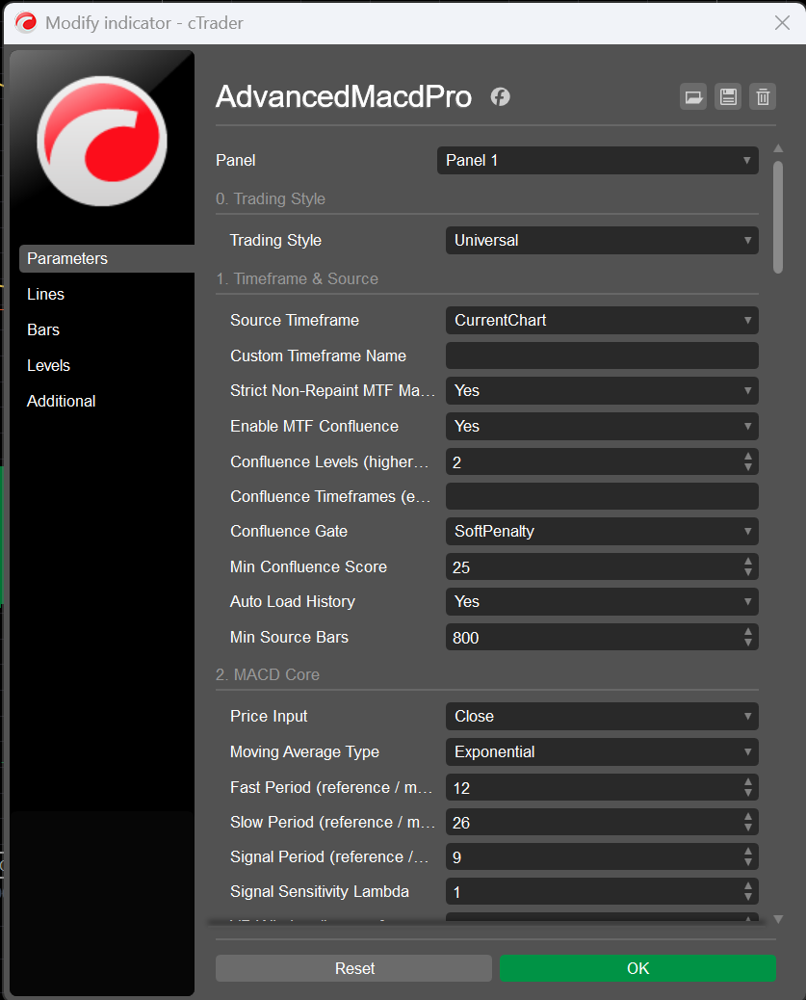
Lines tab is
where the eleven output series can be recoloured, restyled or hidden individually.Trading Style — 1 parameter
| Parameter | Default | Description |
|---|---|---|
| Trading Style | Universal | Master switch. Universal writes nothing; Scalping writes 95 of the 133 parameters before anything is resolved (§4.2). A style never touches the timeframe — that is what makes one style work on M1 and on H1 alike. While a style is active, editing the parameters it wrote has no effect; set it back to Universal and its values stay in the dialog as your starting point. |
Timeframe & Source — 10 parameters
| Parameter | Default | Description |
|---|---|---|
| Source Timeframe | CurrentChart | The series the whole engine computes on. CurrentChart uses the chart you attached to; the twelve fixed entries resolve through the platform's own parser; Custom reads the name below. Every resolved period, window, gate and the whole MTF ladder derive from this single choice (§3). |
| Custom Timeframe Name | (empty) | Free text, used only when Source Timeframe = Custom. Accepts canonical names (Minute15, Hour4, Renko10, Range50, Tick1000), trader shorthand (M15, H4, D1, W1, MN, T1000), Heikin-Ashi variants (HeikinH4) and the words current/chart. Case, spaces and punctuation are ignored. A name the platform rejects falls back to the chart timeframe and is reported, with the list of valid forms. |
| Strict Non-Repaint MTF Mapping | true | Use only bars that had really closed. Affects (a) the chart→source mapping whenever the source is coarser than the chart and (b) the confluence ladder, where it also excludes the still-forming higher-timeframe bar. Off makes both live/intrabar: more responsive, but a registered signal's confluence can then differ after a history reload (§2.3, §9.3). |
| Enable MTF Confluence | true | Master switch of the ladder. The panel's MTF rows, quality component 12, the confluence gate and the confluence-flip alert all follow it (§9). |
| Confluence Levels (higher TFs) | 2 (1–3) | How many higher timeframes the derived ladder uses. Weights are fixed — primary 2.0, then 1.0 / 0.6 / 0.4 — so the nearest higher timeframe matters most. |
| Confluence Timeframes (empty = auto) | (empty) | Explicit ladder; overrides the derived one. Separators: comma, semicolon, space, pipe. Unparseable entries are skipped rather than aborting the list. Examples: H4,D1, Hour4 Daily, H1|D1|W1. |
| Confluence Gate | SoftPenalty | Off = informational only (still shown in the panel). SoftPenalty (default) = enters the quality score centred on your threshold, so a signal against the higher timeframe must earn a higher score. HardGate = pass/fail; below the threshold the candidate is rejected and never scored. |
| Min Confluence Score | 25.0 (0.0–100.0) | 0–100, mapped onto the ladder's −100…+100 scale as 2x − 100: 50 = neutral, 60 = mildly aligned, 75 = strongly aligned. In soft mode it is the neutral point of the quality component; in hard mode it is the gate itself. |
| Auto Load History | true | Request more bars when the loaded window is too short for the resolved profile. Bounded so it can never become an open-ended blocking loop: at most 12 attempts, stopping as soon as a request returns nothing. |
| Min Source Bars | 800 (200–20000) | Minimum loaded source bars before the engine runs at all. Below it you get a blank pane and an explanatory warning instead of half-computed signals. |
MACD Core — 10 parameters
| Parameter | Default | Description |
|---|---|---|
| Price Input | Close | The series the oscillator is built from: Close, Typical (H+L+C)/3, Weighted (H+L+2C)/4, Median (H+L)/2, HeikinAshi, or VolumePriceAdjusted — the conviction-weighted VP-MACD input. Formulas and trade-offs in §5.2. |
| Moving Average Type | Exponential | The kernel of the two MACD legs: Exponential, Hull, KaufmanAdaptive, DoubleExponential, TripleExponential, TimeSeries, Weighted, Triangular, Simple, Wilder. Definitions, warm-up and character in §5.3; all nine alternatives pictured in §19. |
| Signal Line MA Type | SameAsMacdLine | The kernel of the signal line, chosen separately. SameAsMacdLine (default) keeps the historic coupling and a symmetric crossover; Exponential gives the classic Appel definition regardless of the legs. The resolved pair is printed at start-up and shown in the panel when they differ (§5.4). |
| Fast Period (reference / manual) | 12 (2–500) | Fast leg. A reference value anchored at H1 in automatic mode (scaled with exponent 1.00, divided by Global Sensitivity); the literal period in manual mode. The 500 ceiling equals the profile invariant's cap, so a value the dialog accepts is never silently rewritten. |
| Slow Period (reference / manual) | 26 (3–1000) | Slow leg; same reference/manual semantics. The 1000 ceiling equals the invariant's cap — an earlier build capped this at 800 while the dialog accepted 1000, and now any such drift is reported at start-up. |
| Signal Period (reference / manual) | 9 (2–300) | Signal line period; same reference/manual semantics. |
| Signal Sensitivity Lambda | 1.0 (0.80–1.0, step 0.01) | Early-entry sensitivity, 0.80–1.00. At 1.00 the band collapses and the latch reproduces the classic crossing exactly; at 0.92 the trigger is advanced to the bar where the histogram has closed 8% of its typical distance to zero. The band is measured in the oscillator's own units, so λ means the same thing on every timeframe and instrument (§5.6). |
| VP Window (bars, reference / manual) | 20 (3–200) | Bars in the conviction-weighted average of the VP input, and the window of the σ/body means that normalise it. Only used when Price Input = VolumePriceAdjusted. A bar-count window, so it scales with the timeframe in automatic mode. |
| Output Scale | Raw | Units of every plotted value: Raw (price units, comparable to any other MACD), AtrNormalized (divided by that bar's ATR, with a mean-true-range fallback while ATR warms up), SelfNormalized (divided by the rolling mean absolute MACD). Detection is unaffected (§5.7). |
| Output Gain | 1.0 (0.05–50.0, step 0.05) | Plain multiplier applied to every plotted value, label offset and marker clearance. Use it to make a raw oscillator readable on instruments with an extreme price scale; it changes nothing about detection. |
Automatic Adaptation — 9 parameters
| Parameter | Default | Description |
|---|---|---|
| Adaptation Mode | Automatic | Automatic (default) derives every period and window from the resolved bar duration through the scaling law, then applies wall-clock caps. Manual honours every dialog value verbatim (clamped only to the range the parameter itself declares), skips the caps, and reports any value that still did not survive the invariants (§3.6–3.8). |
| Timeframe Scaling | Balanced | The horizon exponent δ of the scaling law: BarCount = 0 (constant bar count), Balanced = 0.15 (default: a mild tilt toward longer periods on fast charts, which the noise term alone under-corrects), TimeHorizon = 1.0 (constant wall-clock horizon). |
| Global Sensitivity | 1.0 (0.5–2.0, step 0.05) | Divides every resolved MACD period: 2.0 → half the periods (twice as fast), 0.5 → double. Implemented as gain = 1/sensitivity inside the scaling, so the label and the effect agree on every timeframe. |
| Microstructure Noise Horizon (min) | 1.0 (0.0–30.0, step 0.5) | ε of the scaling law: minutes of microstructure noise. Raises the noise term, which lengthens periods on fast charts. 1.0 suits liquid FX; 0 disables the term (with BarCount scaling you then get the reference periods verbatim everywhere — the useful baseline for comparing against a plain MACD). |
| Regime-Adaptive Filter Bank | true | Run two MACD instances straddling the nominal periods and mix them by the smoothed Kaufman Efficiency Ratio: the responsive leg wins in trends, the smooth leg wins in chop. Off (or spread 0) gives a single classic MACD (§5.5). |
| Filter Bank Spread | 0.35 (0.0–0.8, step 0.05) | Half-width of the bank, 0–0.8. 0 degenerates the bank to a single MACD (and switches it off); the default 0.35 turns 12/26 into 8/17 + 16/35. |
| Efficiency Ratio Period | 10 (3–60) | Bars in the raw Kaufman ER that drives the blend. The weight actually used is smoothed over 2× this (a derived quantity, clamped to 5…100), because the raw ratio is far too twitchy to drive a blend. |
| Max Period Multiplier | 3.0 (1.0–8.0, step 0.25) | Ceiling of the resolved scale. At M1 the default law wants ~2.6; raising the multiplier lets fast charts run even longer periods, lowering it keeps them closer to the reference set. |
| High Timeframe Policy | Canonical | Canonical (default): at and above the H1 anchor the scale never drops below 1.0, so D1/W1/MN run the classic 12/26/9 that the literature is calibrated on and daily traders expect. HorizonMatched: allow shrinkage toward a comparable wall-clock horizon, with a hard reliability floor of 0.35 (an EMA over fewer than ~4 bars is not a moving average any more). |
Divergence Detection — 15 parameters
| Parameter | Default | Description |
|---|---|---|
| Show Divergences | true | Master switch of the divergence engine: no pivots are scanned, nothing is drawn, no divergence alerts, and the panel's signal and statistics rows go quiet. The oscillator, crossovers and the confluence ladder are unaffected. |
| Divergence Kinds | RegularAndHidden | RegularOnly (reversal), HiddenOnly (continuation) or both (default). Definitions in §6.4. |
| Pivot Lookback (reference / manual) | 5 (2–40) | Fractal legs required on each side of a pivot. It is simultaneously the confirmation delay (a pivot at bar c publishes only after bar c + lookback has closed), the prominence window and half of the minimum-separation invariant. Smaller = more pivots, sooner, noisier. |
| Pivot Prominence (x ATR) | 0.35 (0.0–5.0, step 0.05) | Minimum prominence in ATR units: how far the extremum must stand beyond the deeper of the two neighbouring troughs (peaks). This is the ZigZag-style significance test that removes the micro-pivots behind most false divergences on fast timeframes. 0 disables it; the Scalping style uses 0.55. |
| Max Pivot Candidates | 6 (1–20) | How many pairings are assessed for each new pivot before the strongest is taken. Raising it finds better pairings (especially divergences that span an intermediate pivot) at a small cost. |
| Min Pivot Distance (reference) | 8 (3–120) | Minimum pivot separation in bars (reference). Also raised to 2 × Pivot Lookback by invariant — two pivots closer than that are usually one swing split in two — and capped at 180 days in automatic mode. |
| Max Pivot Distance (reference) | 100 (10–1000) | Maximum pivot separation (reference); the candidate walk stops there. Raised to MinPivotDistance + 10 if inverted, capped at 730 days in automatic mode. |
| Min Price Leg (x ATR) | 0.75 (0.0–10.0, step 0.25) | Minimum price move between the two pivots, in ATR units. Rejects divergences built on a flat price leg, which are geometry rather than signal. |
| Min Oscillator Leg (x RMS) | 0.10 (0.0–2.0, step 0.05) | Minimum oscillator move between the two pivots, in units of the rolling mean absolute MACD. The scale-free counterpart of the price leg: it is what makes “a real disagreement” mean the same thing on every instrument. |
| Require Zero-Line Match (regular) | true | The classic Appel/Brown rule for regular divergences: bearish must be built entirely above zero, bullish entirely below. Hidden divergences are exempt — the rule is about exhaustion at an extreme, and a continuation pattern is not one. |
| Confirm With RSI | true | Hard veto for regular divergences: if the RSI does not move in the signal's direction, the candidate is rejected outright. RSI agreement is additionally graded into the pairing score and the quality score whether or not the veto is armed, so a hair's-breadth agreement is worth less than a decisive one (§6.5). |
| RSI Period (reference / manual) | 14 (2–100) | RSI period (reference / manual). Used for the confirmation above and stored with each pivot. |
| Confirm With Histogram | true | Soft confirmation: the histogram's own agreement enters the pairing score and the quality score but never vetoes, because the histogram also contains the signal line and can legitimately lag. |
| Max Drawn Divergences | 25 (1–200) | How many divergences are on the chart; the newest win and older ones lose their chart objects but keep their records (the learner still needs their outcomes). See the budgets note in §6.9. |
| Draw Only Most Recent N Bars | 1500 (50–100000) | Only divergences ending within this many source bars of the live edge are drawn at all. A drawing budget, not a detection budget: older signals are still registered, resolved and learned from. Scaled inversely with the timeframe and capped at 1095 days in automatic mode. |
Signal Filters — 21 parameters
| Parameter | Default | Description |
|---|---|---|
| Use Trend Filter | true | Adds the trend gate (hard, §6.6 #3) and the trend-alignment component of the quality score (component 9). |
| Trend EMA Period (reference / manual) | 50 (5–500) | Trend EMA period (reference / manual), capped at 730 days in automatic mode. |
| Trend Slope Bars (reference / manual) | 5 (1–60) | Bars over which the trend EMA's slope is measured. The slope is normalised per bar and per ATR, so the gate keeps its meaning across timeframes. Also sets the window of the volatility-regime scorer. |
| Max Counter-Trend Slope (ATR/bar) | 0.15 (0.01–2.0, step 0.01) | ATR per bar. A hidden (continuation) signal is rejected when it fights the trend by more than this; a regular (reversal) signal only when the move is parabolic (3× this), because a reversal is expected to appear against the trend. In automatic mode the value is rescaled by sqrt(reference slope bars / resolved slope bars) to stay statistically comparable. |
| ATR Gate | Adaptive | Adaptive (default): the floor is the Nth percentile of this symbol's own realised ATR% distribution, so a quiet cross pair and Bitcoin are each judged against themselves — a fixed percent cannot work across instruments. Fixed: the reference percent, scaled by sqrt(barMinutes/60). Off. |
| ATR Period (reference / manual) | 14 (2–100) | ATR period (reference / manual). The same ATR denominates pivot prominence, price legs, the trend slope, the outcome engine and the volatility floor. |
| Adaptive ATR Percentile | 20.0 (1.0–49.0, step 1.0) | 1–49. Lower is permissive (only the deadest bars rejected); 25 rejects roughly the quietest quarter of the symbol's recent history. The gate stays inert (permissive) until the model has max(VolWindow/2, 30) samples, because a percentile estimated from a handful of observations is noise, and a noisy floor silently deletes valid signals. |
| Fixed Min ATR % (reference at H1) | 0.05 (0.0–5.0, step 0.005) | Fixed-mode floor, referenced at H1 and scaled by sqrt(barMinutes/60) (ATR as a percent of price shrinks with the square root of bar duration for a diffusion). Ignored — and reported — while the gate is Adaptive. |
| Use ADX Filter | false | Adds a directional-strength gate (off by default): a hidden signal needs ADX ≥ Min ADX (continuation needs a trend); a regular signal needs ADX falling over the slope window or ADX ≤ Min ADX + 15 (reversal needs exhaustion). |
| ADX Period (reference / manual) | 14 (2–100) | ADX period (reference / manual). The platform's Directional Movement System is only instantiated when the filter is on. |
| Min ADX | 20.0 (1.0–90.0) | ADX threshold used by the gate above. |
| Use Volatility Spike Filter | true | Adds quality component 11 — a scorer, not a gate: mean bar range over the resolved slope window vs ATR. >1.8×ATR = spike, pivots unreliable (0.25); <0.45×ATR = dead tape, little to trade (0.60); otherwise 1.0. |
| Use Momentum (falling knife) Filter | true | Adds quality component 10, the post-pivot follow-through. Despite the name it does not veto — Require Post-Pivot Follow-Through does. |
| Use Cluster / Repeat Filter | true | Hard gate: rejects a candidate when an earlier same-direction divergence ended within MinPivotDistance bars and within 1 ATR of the current close — i.e. this is the same market event re-detected one pivot later. |
| Require Post-Pivot Follow-Through | false | Turns the follow-through measure into a hard gate. This is what separates a caught turn from a knife caught mid-fall on a scalping horizon. |
| Min Follow-Through (0-1) | 0.5 (0.0–1.0, step 0.05) | The retraced fraction of the post-pivot range required: 0 = still sitting at the extreme, 1 = fully retraced, 0.5 = at least halfway back. Scale-free, so one threshold works on M1 and on D1. |
| Session Filter | Off | Off (default) / Auto — the symbol's own trading calendar, which is correct for 24/5 FX, 24/7 crypto, exchange equities and futures with a lunch break alike and needs no assumption about the broker's timezone — / ManualUtc. When Auto finds no calendar (some builds, crypto, a failed probe) it falls back to the manual window and says so in the log. |
| Manual Session Start (UTC hour) | 7 (0–23) | Start of the explicit UTC window (bar times are UTC because the indicator declares TimeZones.UTC). Also the fallback used by Auto when the symbol exposes no calendar. |
| Manual Session End (UTC hour, exclusive) | 20 (0–24) | End of the window, exclusive, and may be 24 — so 0–24 is the whole day. A start greater than the end wraps past midnight (22→6). Start == end is read as the whole day rather than as the empty set, which would silently reject every divergence with no way for you to see why. |
| Min Quality Score | 50.0 (0.0–100.0) | The hard floor: below it a candidate is dropped, and with Debug Log the drop is printed with its score. Carries the ±10% timeframe bias in automatic mode. |
| Weak Signal Threshold | 65.0 (0.0–100.0) | Below it a registered divergence is drawn in the weak colour instead of its family colour. Raised to the floor if inverted, so the two bands can never overlap. |
Quality & Learning — 7 parameters
| Parameter | Default | Description |
|---|---|---|
| Adaptive Learning | true | Outcome tracking, the four learning buckets, quality component 13 and the panel's learning rows. Turn it off for a detector that is a pure function of parameters and data (the right choice when comparing configurations). |
| Learning Memory (outcomes) | 120 (10–2000) | How many resolved outcomes the win rate is built from, per bucket. Also (with Max Drawn Divergences) determines the cap of the record list, because the records are the learning data. |
| Min Learning Samples | 12 (1–500) | Below this many resolved outcomes in a bucket, component 13 is dropped from numerator and denominator rather than being treated as 50%: two trades are not a track record, and counting them as neutral-but-present would let a lucky pair move every subsequent score. |
| Persist Learning (LocalStorage) | true | Store the counters in the platform's LocalStorage, keyed by symbol and resolved profile label, so M1 statistics never contaminate H4. Restored at start-up, written throttled and once more on destroy. A history reload resets them (§7.4). |
| Outcome Horizon (reference) | 60 (5–1000) | Bars given to a signal to resolve before it is marked expired. Reference value, capped at 120 days in automatic mode: a horizon nobody would ever see resolved is not a measurement. |
| Outcome Target (x ATR) | 1.0 (0.1–10.0, step 0.1) | Win distance in ATR multiples from the confirmation-bar close. |
| Outcome Stop (x ATR) | 1.5 (0.1–10.0, step 0.1) | Loss distance in ATR multiples. The default 1.0 target against a 1.5 stop deliberately measures a conservative expectation: the win rate that results is the one a tight-target/loose-stop trader would actually experience. |
Signal Markers — 10 parameters
| Parameter | Default | Description |
|---|---|---|
| Show Cross Signals | true | Master switch of the crossover marker layer. The latch, the trigger outputs and the alerts keep working when it is off. |
| Marker Style | TextAndArrow | TextAndArrow (default), TextOnly, ArrowOnly, None. |
| Marker Wording | BuySell | The label text: BUY/SELL (default), LONG/SHORT, TURN UP/TURN DOWN, BULLISH/BEARISH. Zero-line crosses always read ABOVE 0/BELOW 0 so they cannot be mistaken for crossovers. |
| Bullish Signal Color | “#00E676” | Bullish marker colour (arrow and label). |
| Bearish Signal Color | “#FF1744” | Bearish marker colour. |
| Marker Font Size | 9 (6–22) | Marker label size. Divergence labels follow this too — they are chart markers, not panel content, so they are deliberately not coupled to Panel Font Size. |
| Marker Label Offset (x oscillator scale) | 0.9 (0.0–5.0, step 0.1) | Label clearance in units of the oscillator's own scale (the rolling mean absolute histogram, with fallbacks). Converted into whatever scale the outputs are plotted in, then limited to 40% of the visible band and stepped toward the zero axis, so a label can never be clipped out of the pane (§8.2). |
| Mark Only Closed Bars | false | Mark only closed source bars. Off (default) marks the forming bar too and withdraws the marker if the cross does not survive to the close — faster, and honest about being provisional. On is strictly non-repainting. |
| Mark Zero-Line Crosses Too | false | Additionally mark zero-line crosses (neutral wording). Off by default: on a fast chart the zero line is crossed often and the markers crowd out the crossovers. |
| Max Cross Markers | 200 (5–2000) | Hard cap on live marker objects; the oldest are evicted first. The back-fill after a reload is bounded by DrawRecentBars + 2× this value, so a deep history cannot stall the first paint (§8.3). |
Divergence Appearance — 17 parameters
| Parameter | Default | Description |
|---|---|---|
| Draw Style | LineAndMarkers | LineAndMarkers (default), LineOnly, MarkersOnly. |
| Mirror Divergences On Price Chart | false | Also draw each divergence between its two price extremes on the chart itself (the orange/green lines in the top pane of the overview screenshot). Objects are tracked separately so cleanup cannot leak names. |
| Show Drop Lines | true | Dotted verticals from each end of the divergence down to the zero axis. They make the two oscillator legs directly comparable at a glance; the Scalping style turns them off to keep a busy fast pane readable. |
| Show Labels | true | The text label on each divergence. |
| Label Wording | Plain | Plain: HIDDEN BEAR DIV 92% / BULL DIV 78%. Compact: HidBear 92% / RegBull 78%. Full: HIDDEN BEARISH DIVERGENCE - GRADE A - QUALITY 92%. |
| Show Grade (A/B/C) In Label | false | Append the A/B/C grade to the label. |
| Show Quality % In Label | true | Append the quality percentage to the label. On by default: it is the single most useful number on the chart, because it summarises all thirteen components. |
| Regular Bullish Color | “#00E676” | Regular bullish divergences. |
| Regular Bearish Color | “#FF1744” | Regular bearish divergences. |
| Hidden Bullish Color | “#00BFA5” | Hidden bullish divergences — teal by default, so a continuation is never mistaken for a reversal at a glance. |
| Hidden Bearish Color | “#FF6E40” | Hidden bearish divergences. |
| Weak Signal Color | “#FFD54F” | Any divergence whose quality is below Weak Signal Threshold, regardless of family. Amber by default. |
| Line Thickness | 2 (1–6) | Line weight of the divergence line and of the price-chart mirror. |
| Line Style | Solid | Solid (default), Dots, Dashes, Lines, DashesRare. |
| Bullish Marker Icon | UpTriangle | Icon at both ends of a bullish divergence. |
| Bearish Marker Icon | DownTriangle | Icon at both ends of a bearish divergence. |
| Object Z-Index | 5 (0–100) | Z-index of the divergence line layer, clamped to 0…98: labels sit at +1 and crossover markers at +2, and the platform clamps ChartObject.ZIndex to 0…100 on the way in, so without the cap a user-set 99 or 100 would collapse all three layers onto one value and lose the intended paint order. |
Info Panel — 19 parameters
| Parameter | Default | Description |
|---|---|---|
| Show Info Panel | true | Master switch of the panel. When off, the cards are hidden (or the fallback text removed) and no refresh work is done. |
| Panel Layout | MergedCard | MergedCard (default): one card, two sections, a hairline rule between them. SplitTopBottom: two cards on opposite vertical edges, but only when two boxes actually fit — otherwise it collapses onto one section with the full height budget rather than letting the cards overlap the plot. StatusCardOnly / SignalsCardOnly. |
| Panel Side | Left | Left (default), Right or Centre. |
| Vertical Edge | Bottom | Which vertical edge is primary; in split mode the other section goes to the opposite edge. |
| Use Native Controls (else static text) | true | Build the panel from real chart controls (opaque cards pinned to the corner of the indicator window). Off — or on a build that cannot host controls — everything degrades to two corner-anchored static-text objects with the same content and the same priority selection (§10.3). |
| Panel Font Size | 11.0 (7.0–22.0, step 0.5) | Cell font size. Also determines the row height, and therefore how many rows fit. |
| Panel Opacity | 0.90 (0.10–1.0, step 0.05) | Card opacity. 0.90 default; the Scalping style uses 0.92. |
| Panel Margin (px) | 8.0 (0.0–60.0) | Distance from the pane edge, in pixels. Also the reserve used when computing how many rows fit, so the card can never spill outside the pane. |
| Panel Background | “#111823” | Card background. |
| Panel Border | “#2C3A4D” | Card border. |
| Panel Text | “#E6EDF3” | Primary text colour. |
| Panel Label Text | “#8FA3B8” | Muted text colour (labels, and rows that carry no verdict). |
| Show Configuration Section | true | The configuration section: style, timeframe, resolved MACD triple, kernel, signal kernel, price input, period scale, filter-bank legs, pivot geometry, quality gate. The Scalping style turns it off — the configuration is the style. |
| Show Market Section | true | The market section: MACD line, signal, histogram, trend and slope, momentum, histogram strength, ATR% against the floor in force, session state, regime (ER), ADX, price, bar time. |
| Show MTF Confluence Section | true | The MTF section: the weighted confluence score and one row per available level. |
| Show Signals Section | true | The signals section: overall bias and the last divergence with its age, quality, legs and outcome. |
| Show Statistics Section | true | The statistics section: the census over the stats window, the win rate with its sample size, the average quality, and one row per learning bucket. |
| Stats Window (bars, reference / manual) | 100 (25–2000) | Bars of recent history the panel's census and averages cover. A reference value: scaled like every other window in automatic mode (and capped at 365 days), literal in manual mode. On M1, 100 bars is under two hours of trading; on W1 it is two years — which is why it is a parameter rather than a constant. |
| Panel Refresh (ms) | 250 (50–5000) | Minimum interval between panel rebuilds. The panel is also rebuilt immediately when something is dirty and re-fitted when the pane is resized. |
Alerts — 12 parameters
| Parameter | Default | Description |
|---|---|---|
| Enable Alerts | true | Master switch of all three alert channels. |
| Alert: Signal-Line Cross | true | Alert on MACD/signal-line crossovers (the latch of §5.6, so it respects λ). |
| Alert: Zero-Line Cross | false | Alert on zero-line crosses. Off by default: on a fast chart this is the noisiest of the four triggers. |
| Alert: Divergence | true | Alert on registered divergences that clear Alert Min Quality and are effectively live (confirmation bar within two bars of the live edge). |
| Alert: MTF Confluence Flip | false | Alert when the sign of the weighted confluence score changes. At most one per source bar; a second flip inside the same bar is deferred to the next one rather than dropped. |
| Alert Min Quality | 70.0 (0.0–100.0) | The alert bar for divergences — separate from, and normally above, Min Quality Score. Signals between the two are drawn and counted but stay silent; the relationship is reported at start-up. |
| Only On Closed Source Bar | true | Evaluate the last closed source bar, which makes alerts strictly non-repainting (default). Off evaluates the forming bar: earlier, at the cost of an alert that the close can still contradict. The Scalping style turns it off, because a scalper acts inside the bar. |
| Play Sound | true | Sound channel. |
| Bullish Sound | PositiveNotification | Sound played for a bullish signal. |
| Bearish Sound | NegativeNotification | Sound played for a bearish signal. |
| Write Alerts To Log | true | Log channel: the full formatted message, invariant culture. |
| Show Alert Popup | true | Popup channel: a platform notification with the caption Advanced MACD Pro, colour-coded by direction (green bullish, red bearish). On a build without the custom-notification API the attempt is made once, a NOTE is printed and the channel disables itself — log and sound still work. |
Advanced — 2 parameters
| Parameter | Default | Description |
|---|---|---|
| Debug Log | false | Adds one line per rejected candidate (with the reason), one line per registered divergence, the learning restore, and the timeframe parser's refusal reason. The first place to look when you want to know why nothing fired (§14.3). |
| Log Resolved Profile On Start | true | Prints the resolved configuration at start-up: style, source and bar duration, mode, scale, the MACD triple with both kernels, the price input, the filter bank and its spread, λ, pivot geometry, auxiliary periods, gates, session, all four windows and the warm-up estimate. Read from the resolved settings, never from the dialog (§14.1). |
14. Diagnostics & the Log
14.1 What is printed at start-up
With Log Resolved Profile On Start (default on) you get the resolved configuration — the numbers the
indicator is actually running, read from the resolved settings object rather than from the dialog:
[Advanced MACD Pro] style=UNIVERSAL | source=h1 (60.00 min/bar) | mode=Automatic | scale=1.000 [Advanced MACD Pro] MACD 12/26/9 kernel=Exponential signal kernel=Exponential input=Close bank=on (+/-35%) [Advanced MACD Pro] filter bank: responsive 8/17 smooth 16/35 spread=35% [Advanced MACD Pro] early entry: lambda=1.00 (band 0% of the mean |histogram|) [Advanced MACD Pro] pivots: lookback=5 prominence=0.35ATR distance=[10..100] [Advanced MACD Pro] aux: RSI=14 ATR=14 ADX=14 TrendEMA=50 slopeBars=5 ER=10 [Advanced MACD Pro] gates: ATR=adaptive p20 = 0.0311% maxCounterSlope=0.150 minQ=50.0 weakQ=65.0 [Advanced MACD Pro] session=off | follow-through>=0.50 | volatility window=240 bars [Advanced MACD Pro] windows: normalisation=104 stats=100 drawRecent=1500 bars | warm-up ~78 bars [Advanced MACD Pro] outcome horizon=60 bars (target 1.0ATR / stop 1.5ATR) [Advanced MACD Pro] MTF ladder: h2 h3
The warm-up line counts the deeper filter-bank leg (35) plus the signal kernel (9) plus a quarter of the
normalisation window (26) plus 8. The ladder line lists the derived levels for an h1 source — the next two rungs up
are h2 and h3; if you pin Confluence Timeframes = H4,D1 it lists those instead.
14.2 Every warning and note, and what it means
| Message | Condition | What was done about it |
|---|---|---|
WARNING: Fast Period (x) is not below Slow Period (y) | the pair was transposed | swapped, not flattened; the resolved triple is printed |
WARNING: Min Pivot Distance (x) exceeds Max Pivot Distance (y) | inverted window | resolved to a non-empty window, printed |
WARNING: Weak Quality Threshold (x) is below Min Quality Score (y) | overlapping bands | raised to the floor so the bands cannot overlap |
NOTE: Alert Min Quality … at or below the quality gate | alert bar ≤ gate | nothing to fix — every signal that passes the gate also alerts |
NOTE: Alert Min Quality … ABOVE the quality gate | alert bar > gate | signals between the two are drawn and counted but stay silent; the message names the number that alerts |
WARNING: Slow Period (x) is above the hard ceiling (1000) / same for Fast | a template or preset pushed a value outside the declared range | clamped, printed — the ceilings equal the parameters' own MaxValue, so the dialog cannot produce this |
WARNING: X = a was resolved to b | manual mode only: a value did not survive the profile invariants | this is the drift check for the whole manual parameter set — it exists because a slow leg once capped at 800 while the dialog accepted 1000, silently |
NOTE: the manual session window is 09-09 UTC, which is empty | start == end under end-exclusive hours | read as the whole day; use Session Filter = Off to disable it |
NOTE: this symbol exposes no trading calendar | Auto session with no MarketHours | falls back to the manual window, whose hours are printed |
NOTE: Fixed Min ATR % is ignored while ATR Gate = Adaptive | both set | tells you which one is in force and how to use the other |
WARNING: Custom Timeframe 'x' is not a timeframe this platform recognises | parse failure | the chart timeframe is used instead; the message lists every accepted form |
WARNING: only N bars of TF history are loaded but the resolved configuration needs about M | insufficient history | names the three fixes: scroll back, raise Min Source Bars, or use CurrentChart |
NOTE: Signal Lambda is 0.00 | band closed | informational: crossovers are detected at the exact crossing |
NOTE: individual parameter values … are the ones the 'SCALPING' style wrote | a style is active | editing them has no effect until the style is set back to Universal |
STYLE 'SCALPING' is ACTIVE… | a style is active | printed unconditionally — a style silently overriding a hundred parameters is the one thing a user must never have to guess about |
NOTE: this platform build refused the popup notification | no custom-notification API | printed once; alerts continue through log and sound |
14.3 Debug Log
Debug Log = true adds three things, and only three — it is not a firehose:
- One line per rejected candidate, with the reason. The format is
[Skip {Bull|Bear}{Hidden|Regular}] {reason} q={quality} @ {bar time UTC}; a hard-gate rejection reportsq=0.0because the candidate never reached the scoring stage. Real examples:[Skip BullHidden] ATR% 0.0091 below floor 0.0311 q=0.0 @ 2026-10-10 14:00,[Skip BearRegular] trend too strong to fade (-0.412) q=0.0 @ …,[Skip BullRegular] quality below threshold q=47.3 @ …,[Skip BullRegular] clustered with a previous signal q=0.0 @ …,[Skip BearHidden] outside the trading session (2026-10-10 22:15 UTC) q=0.0 @ …,[Skip …] duplicate end pivot q=0.0,[Skip …] follow-through 0.31 < 0.55 q=0.0,[Skip …] ADX gate (14.2) q=0.0,[Skip …] MTF gate (-41) q=0.0,[Skip …] hidden vs trend (-0.183) q=0.0. This is the answer to “why hasn't it fired in three days?”. - One line per registered divergence:
[Div BullRegular A] q=82.4 priceLeg=1.31ATR oscLeg=0.27RMS dist=34 @ …. - Learning restore and the timeframe parser's refusal reason (§3.1).
SECTION 2 — HOW TO USE
The working trader's guide: every glyph, every panel row, every decision.
15. Installation & First Launch
- Get the source into cTrader. Open Automate → New →
Indicator, paste the whole of
AdvancedMacdPro.cs, and press Build. It compiles againstcAlgo.APIwith no dependencies and no external packages. (A pre-built.algocan be installed by double-clicking it or by dragging it onto the chart.) - Attach it to a chart. It is an oscillator, so it opens in its own pane under the price chart — it is
not an overlay (
IsOverlay = false), and it declaresAutoRescale = trueandTimeZone = UTC. - Read the log. The first thing it prints is the resolved profile (§14.1) — the actual periods,
windows and gates in force, not the dialog's reference values. If a parameter combination was contradictory you get a
WARNINGor aNOTEsaying what was reconciled and to what. If history is too short for the resolved configuration, it says so and names the three fixes. - Give the pane some height. The panel fits itself to the pane: a tall pane shows more rows, a short one hides the low-priority cells and, if even one row cannot fit, hides the card rather than covering the plot.
- Check the panel's
TFrow. It shows the resolved source timeframe and whether the profile isautoormanual. Everything else in the panel is derived from those two facts. - Let the warm-up finish. The oscillator needs its slow leg, the signal line and part of the normalisation
window before it plots; the start-up log prints the estimate. The adaptive ATR gate stays inert (permissive) until its
volatility model has enough samples — the panel's
ATRrow readsWARMuntil then.
TF row shows the timeframe you meant → histogram is
coloured (not all NaN) → ATR row shows OK rather than WARM → the MTF
rows list the levels you expected. If any of those is wrong, §33 tells you where to look.
16. Reading the Pane — Every Glyph
| Glyph | What it means | What to check |
|---|---|---|
| MACD line | fast MA − slow MA of the chosen price input, possibly the blend of two such pairs (§5.5) | its side of zero, and whether it is above or below the signal |
| Signal line | a moving average of the MACD line, with its own kernel choice | the gap between the two is the histogram |
| Zero line (dotted) | an explicit output series, so it renders on every build and can be hidden from the legend | regular divergences are required to sit on the correct side of it |
| Bright green bar | histogram ≥ 0, expanding and at/above its own average size | bullish momentum that is actually building |
| Muted green bar | histogram ≥ 0, but contracting or below average | bullish but tired — the usual home of a regular bearish divergence's second leg |
| Bright red bar | histogram < 0, expanding and strong | bearish momentum building |
| Muted red bar | histogram < 0, weak | bearish but tired |
| BUY label + up triangle | the crossover latch flipped bullish on that source bar. With λ < 1 it may be an advanced trigger: the histogram has climbed out of the early-entry band on its way to the crossing | hover it: the tooltip names the kind of cross, the λ in force, the MTF score and the oscillator values |
| SELL label + down triangle | the latch flipped bearish | on a forming bar it is provisional and will be withdrawn if the cross does not survive the close |
ABOVE 0 / BELOW 0 | a zero-line cross (only when Mark Zero-Line Crosses Too is on) | neutral wording on purpose, so it cannot be read as a crossover signal |
| Divergence line + end markers | a registered divergence between two confirmed pivots, drawn in the oscillator pane between the two plotted extremes | colour tells you family and strength: green/red = regular, teal/orange = hidden, amber = quality below the weak threshold |
| Divergence label | HIDDEN BEAR DIV 92% — family, direction, quality. Optionally the A/B/C grade | the percentage is the 13-component score of §6.7, not a probability |
| Drop lines (dotted verticals) | from each end of the divergence down to the zero axis | they let you compare the two oscillator legs directly |
| Mirror line on the price chart | the same divergence drawn between its two price extremes (top pane of the overview screenshot) | the fastest way to see whether the price leg is a real swing or a shallow diagonal |
| Divergence dot (output series) | plotted at the confirmation bar of every registered divergence — the first bar on which it could have been acted upon | never at the pivot; that would be look-ahead |
17. The Info Panel, Line by Line
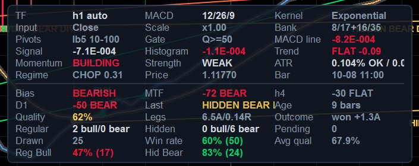
Panel Layout = MergedCard): label/value cells, up to three columns per row,
with the configuration and market sections above the hairline rule and the signals and statistics sections below it.
The card pins itself to the corner chosen by Panel Side and Vertical Edge.Cells are colour-coded: bright = a verdict (bullish/bearish, OK/LOW, OPEN/CLOSED), muted = context with no
verdict (labels, timestamps, counts). Rows that cannot be computed print - rather than a guess.
17.1 Configuration section
| Row | Reads as | Meaning |
|---|---|---|
Style | SCALPING | only shown when a style is active — a reminder that it owns the parameters below it |
TF | h1 auto / m15 manual | the resolved source timeframe and which adaptation mode produced the profile |
MACD | 12/26/9 | the resolved fast/slow/signal triple — not the dialog's reference values |
Kernel | Exponential, Hull… | the kernel of the two MACD legs (resolved) |
SigKernel | Exponential | shown only when the signal kernel differs from the MACD kernel; if it is absent, the signal line follows the MACD kernel |
Input | Close, VP-Adj, Typical, Weighted, Median, Heikin | the price series the oscillator is built from |
Scale | x1.00, x2.59 | the timeframe scale factor of §3.3 — how much longer the periods are than the H1 reference |
Bank | 8/17+16/35 | the filter bank's two leg pairs, shown only when the bank is on |
Pivots | lb5 10-100 | pivot lookback and the [min…max] separation window actually in force |
Gate | Q>=50 | the quality floor a candidate must clear to be registered at all |
17.2 Market section
| Row | Example | Meaning |
|---|---|---|
MACD line | +0.00042 | the oscillator in display units, signed, coloured by side of zero |
Signal | +0.00031 | the signal line, same units |
Histogram | +0.00011 | the difference, coloured by side |
Trend | UP +0.07 / FLAT +0.00 / DOWN -0.11 | the trend EMA's slope in ATR per bar over the resolved slope window. UP/DOWN means beyond the counter-trend limit; FLAT means inside it |
Momentum | BUILDING / FADING / STEADY | |histogram| vs the previous bar. BUILDING is coloured by the histogram's side |
Strength | STRONG / NORMAL / WEAK | |histogram| against its own rolling mean: ≥1.5× is STRONG, ≥1× NORMAL, below WEAK. This is the same test that picks the bright histogram buckets |
ATR | 0.041% OK / 0.031% p20 | ATR as a percent of price, the verdict against the floor in force, then the floor itself and the percentile it came from. WARM means the adaptive model has not armed yet (the gate is permissive); LOW means this bar would be rejected; OFF means no gate |
Session | OPEN / CLOSED symbol calendar (5 sessions) | shown only when a session filter is on; names the source of the verdict |
Regime | TREND 0.71 / MIXED 0.44 / CHOP 0.18 | the smoothed Kaufman Efficiency Ratio — the weight that mixes the filter bank. ≥0.55 TREND, ≥0.35 MIXED, below CHOP |
ADX | 24.6 | shown only when the ADX filter is on |
Price / Bar | 1.09412 / 10-10 14:00 | the source bar's close and open time (UTC) |
17.3 MTF section
| Row | Example | Meaning |
|---|---|---|
MTF | +62 BULL | the weighted confluence score (−100…+100) and its state: BULL ≥ +33, BEAR ≤ −33, otherwise NEUTRAL |
h2, h4, D1, … | +75 BULL | one row per available ladder level, labelled with that timeframe's own short name (an h1 chart with a derived ladder shows h2 and h3; a pinned H4,D1 shows those). A level with too few bars or no closed mapping is simply absent — it contributes nothing, not even to the denominator |
17.4 Signals and statistics sections
| Row | Example | Meaning |
|---|---|---|
Bias | BULLISH / Bull (below 0) / NEUTRAL | MACD vs signal, with the zero-line context spelled out: a bullish cross below zero is a correction, not a trend |
Last | HidBear A / none in window | the most recent divergence inside the stats window: family, direction, grade |
Age | 12 bars | how old that signal is, in source bars — so an old signal can never be mistaken for a fresh one |
Quality | 92% | its 13-component score, coloured against the weak threshold |
Legs | 1.3A/0.27R | the price leg in ATR units and the oscillator leg in RMS units — the two measurements the gates are built on |
Outcome | won +1.4A / lost -1.5A / expired / open +0.6/-0.2A | the measured result in ATR multiples, or the running best/worst excursion while it is still open |
Regular / Hidden | 3 bull/1 bear | the census over the stats window, split by family and direction |
Pending | 2 | signals in the window whose outcome has not resolved yet |
Drawn | 7 | how many divergences are currently on the chart (against Max Drawn Divergences) |
Win rate | 58% (43) / collecting / off | the win rate with its sample size in brackets — the sample size is the number, the percentage is the adjective. collecting means fewer resolved outcomes than Min Learning Samples |
Avg qual | 71.4% | mean quality of the signals in the window: a proxy for how selective the current configuration is |
Reg Bull, Reg Bear, Hid Bull, Hid Bear | 62% (21) | one row per learning bucket — the four families do not share a track record, because they are not the same hypothesis |
18. The Parameter Dialog & Presets
18.1 The order to change things in
- Trading Style — decide whether you want a hand-built configuration or the scalping one. Everything below is overwritten by a style, so choose it first.
- Source Timeframe — the single most consequential choice. Leave it on
CurrentChartunless you specifically want an oscillator computed on another series. - Adaptation Mode — keep
Automaticunless you are deliberately testing fixed periods. In automatic mode treat every “(reference)” number as an anchor, not as a setting. - What you want to see — groups 4 (divergences), 7 (markers) and 8 (appearance). These are the ones you will actually tune.
- How picky it is — group 5. Loosen here if you see nothing, tighten here if you see too much (§23).
- Only then the oscillator internals (group 2) and the adaptive engine (group 3).
18.2 Saving what you built
Use the platform's own template mechanism (Save as template in the dialog) to keep a
configuration, and remember two things: a template stores the values as shown, so if a style is active it stores
the style's values — and a style re-applies itself on every initialisation regardless of what the dialog shows.
To keep a tuned variant of the scalping setup, set Trading Style = Universal first, then save.
18.3 The Lines tab
All eleven outputs can be recoloured, restyled, thickened or hidden individually there (§12.1). Hiding
Hist Bull Weak and Hist Bear Weak, for example, leaves only the strong buckets — a quick
way to see momentum that is actually building. Hiding Zero Line removes the dotted reference without
affecting any detection.
19. Kernel Gallery — the Same Chart, Nine Kernels
Each screenshot below was taken with a different Moving Average Type; everything else is the chart's own
configuration. Compare three things: how far the MACD line sits from the turns in price,
how much noise survives in the histogram, and how early or late the BUY/SELL markers land relative to the swing. The
table columns are the kernel's definition, its warm-up and what it is good for — the same facts as §5.3, so you
can match a picture to a formula.
| Kernel | Warm-up | What to look at in the screenshot |
|---|---|---|
| Simple | n | the reference. Equal weighting shows the raw cost of no weighting: flat-topped turns and a visibly late cross |
| Weighted | n | less lag than Simple, more noise than Exponential — the middle of the classic three |
| Exponential | n | the default and the one everything else is judged against (shown in the overview and panel screenshots, §16–17) |
| Wilder | n | smoother than an EMA of the same period (α = 1/n vs 2/(n+1)): the histogram is quieter and the crosses later |
| Hull | n + √n | zero group delay. Turns are sharp, the histogram flips early, and the markers land closest to the extreme |
| DoubleExponential | 2n | one de-lag stage: noticeably earlier than EMA, without Hull's overshoot |
| TripleExponential | 3n | two de-lag stages: the most aggressive of the exponential family, and the one most likely to overshoot a spike |
| KaufmanAdaptive | n+1 | fast in trends, nearly flat in chop — look at how quiet it goes sideways |
| Triangular | 2(n/2+1) | double-smoothed: the quietest and latest. Useful as a context line, poor as a trigger |
| TimeSeries | n | a least-squares line evaluated at the newest sample: reacts to slope, so it overshoots on single-bar spikes |
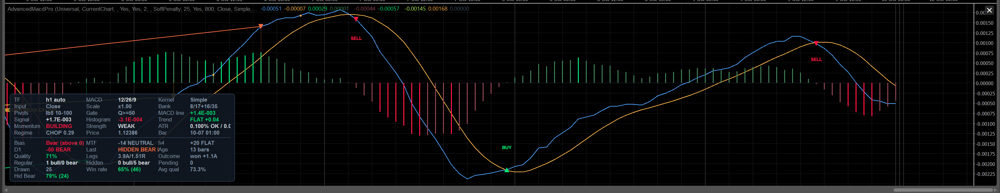
Moving Average Type = Simple — equal weights, the reference behaviour.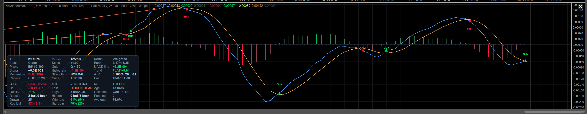
Weighted — linearly weighted, n…1.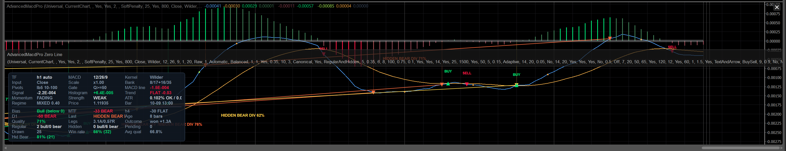
Wilder — RMA smoothing, α = 1/n.Hull — WMA(2·WMA(n/2) − WMA(n), √n). The scalping choice.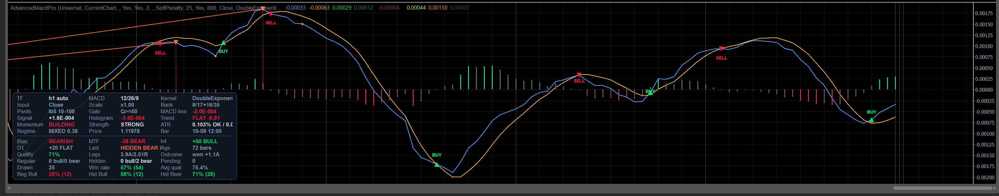
DoubleExponential — 2·EMA − EMA(EMA).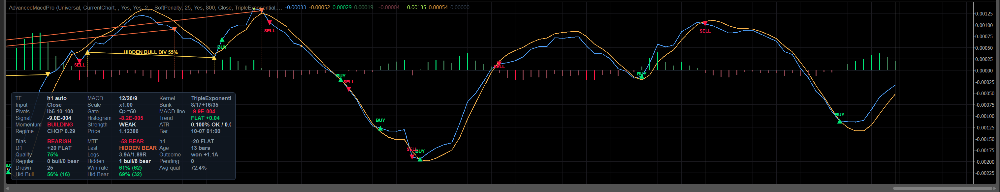
TripleExponential — 3E1 − 3E2 + E3.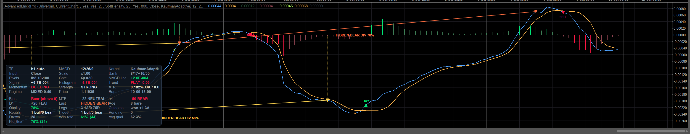
KaufmanAdaptive — KAMA, efficiency-ratio adaptive.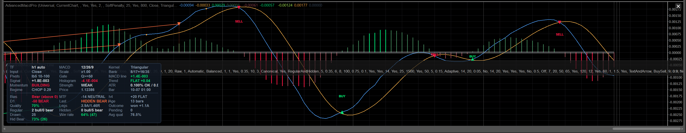
Triangular — SMA of an SMA.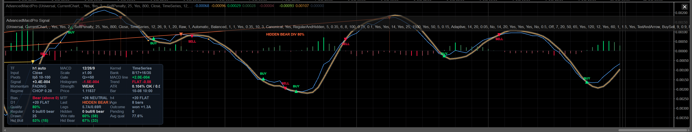
TimeSeries — least-squares linear regression value.Signal Line MA Type = SameAsMacdLine, so the crossover
stays symmetric. If you set the signal line to Exponential under a de-lagged MACD line, the cross moves
later and smooths out — which is exactly what the classic Appel definition does, and exactly what a scalper usually
does not want.
20. Trading Divergences
20.1 Reading one signal in five seconds
- Colour: which family? Green/red = regular (reversal). Teal/orange = hidden (continuation). Amber = quality below your weak threshold, whatever the family. If you only trade reversals, you have just filtered half the labels without reading anything.
- Label: how good? The percentage is the 13-component score. Treat it as a ranking, not a probability: 90% means every component that could be evaluated came back strong.
- Grade (if shown): what kind of disagreement? A = the oscillator turned back through the zero line, or the family-aware delta is ≥ 0.60 of the oscillator's scale — genuine exhaustion. B = a clear but shallower disagreement. C = a diagonal, the weakest form.
- Position: where in the move? A regular bullish divergence wants price at a lower low after a downtrend, with the trend row reading DOWN or FLAT and momentum FADING. The same label printed halfway up a strong rally is a different (worse) trade.
- Context: what do the higher timeframes say? The
MTFrow. A bullish divergence againstMTF −62 BEARis a counter-trend scalp; with+62 BULLit is a pullback entry.
20.2 The two playbooks
| Regular (reversal) | Hidden (continuation) | |
|---|---|---|
| Claim | the price extreme is not confirmed by momentum → the move is exhausting | momentum is stronger (or weaker) than the shallow price pullback suggests → the trend resumes |
| Where it works | at the end of an extended move, ideally with ADX falling and the trend slope flattening | inside an established trend, on the first pullback that makes a shallower extreme |
| What the gates demand | correct side of the zero line; counter-trend move not parabolic (≤ 3× the slope limit); ADX falling or low if the ADX filter is on | must not fight the trend beyond the slope limit; ADX ≥ Min ADX if the ADX filter is on |
| Typical failure | catching a knife: the divergence is real but the trend has one more leg. This is what Require Post-Pivot Follow-Through is for | a trend that has already ended: the “continuation” is the last pullback. Check the trend row and the higher timeframes |
| Target/stop used for its statistics | the same for both: Outcome Target × ATR against Outcome Stop × ATR from the confirmation bar's close. The win rate you see per family is measured on exactly that, so the number is comparable to how you would trade it only if your own target/stop ratio is similar | |
20.3 When to ignore a divergence that was drawn
- It is amber. Below your weak threshold. The engine registered it because it cleared the floor; the colour says it is the weakest thing on the chart.
- It is old. The panel's
Agerow is there for this. A divergence from 200 bars ago is history, not a signal — and the alert logic agrees: it only fires for signals whose confirmation bar is within two bars of the live edge. - The ATR row says
WARM. The volatility gate has not armed yet, so the adaptive floor is not protecting you from dead-market pivots. On a freshly loaded chart, wait. - The family bucket's win rate is small-sample.
Hid Bear 57% (7)is not information; the panel prints the sample size next to the percentage for exactly this reason. - Price is inside a spike. The volatility-regime component already marked it down (0.25 for a spike), but a spike also makes the pivots themselves less trustworthy than their prominence suggests.
pivot + lookback, the first bar on which the pivot could have been known. When you compare your own
results with the panel's win rate, use the same reference; entering at the pivot price is a number nobody can actually
achieve, and it is the most common reason a manual tally disagrees with the measured one.
21. Trading Crossovers
21.1 What you are being told
A BUY/SELL marker is a transition of the crossover latch (§5.6). With
Signal Sensitivity Lambda = 1.00 that is exactly the classic MACD/signal crossing. Below 1.00 it is an
advanced trigger: the histogram has climbed out of a band measured in its own average size, on its way to a
crossing that has not happened yet.
| λ | Behaviour | Use when |
|---|---|---|
| 1.00 (default) | the classic crossing; fewest false triggers, latest entry | you want comparability with any other MACD, or you trade swings |
| 0.96–0.98 | a small advance; the trigger often lands one bar earlier | intraday, when one bar of the move matters |
| 0.92 (Scalping style) | a real advance: the histogram must close 8% of its typical distance to zero | scalping, where waiting for the full cross costs more than the confirmation is worth |
| 0.80 (minimum) | aggressive; expect triggers inside consolidations that never complete the cross | rarely. The latch guarantees no duplicates and no misses, but it cannot guarantee the crossing follows |
21.2 The two things that make the advance safe
- An early trigger may only fire in the direction the histogram is leaving, never the one it occupies — otherwise the latch would flip back on the next bar and print BUY/BUY pairs out of noise inside the band.
- An early trigger is consumed by the crossing it anticipated, so the crossing itself does not print a second one. Exactly one trigger per oscillator excursion.
21.3 Live vs closed-bar marking
Mark Only Closed Bars = false (default) evaluates the forming source bar: you see the cross the moment it
happens, and the marker is withdrawn if the cross does not survive to the close. Set it to true for a
strictly non-repainting marker trail — the price of that is one bar of latency, which on H4 is four hours.
Only On Closed Source Bar does the same job for alerts, independently.
21.4 Combining the two signal types
MTF agreeing and the
ATR row reading OK. The divergence tells you the move is exhausting, the cross tells you it has
turned, the ladder tells you the bigger picture is not against you, and the ATR row tells you the market is awake enough
to pay for the trade. Three of the four alone is a discretionary trade; all four is what the gates were built to find.
22. Multi-Timeframe Workflow
- Decide what the ladder is for. Directional context (keep
SoftPenalty) or a hard veto (HardGate). Soft is the better default: a divergence against the higher timeframe is not worthless, it just has to earn a higher quality score. - Let it derive, or pin it. Empty
Confluence Timeframestakes the nextConfluence Levelstimeframes above the source from the standard ladder. Pin it when you have a view — an H1 trader who cares about H4 and D1 and nothing else should sayH4,D1. - Check the ladder actually resolved. The log prints
MTF ladder: H4 D1, and the panel shows one row per available level. A missing row means that series has too few bars or no closed mapping yet — not an error, and it contributes nothing rather than dragging the score toward zero. - Read the score, not the state.
BULL/BEAR/NEUTRALare the ±33 bands; the number tells you how much of the ladder agrees.+100means every level is above zero, above its signal and rising. - Keep strict mapping on unless you specifically want the intrabar view. With it on, the ladder only ever quotes higher-timeframe bars that have really closed, so a registered signal's confluence — and therefore its quality — cannot change after a history reload.
- Remember each level is independently adaptive. An H4 level under an M5 primary is not your M5 settings read on H4 data; it is the profile the indicator would resolve if you opened H4 directly. That is why the ladder stays meaningful across a wide timeframe span.
| Source | Derived ladder (2 levels) | Typical use |
|---|---|---|
| M1 | M2, M3 | very fast scalping; consider pinning M15,H1 instead — the derived neighbours of M1 are almost the same information |
| M5 | M10, M15 | scalping; pinning M30,H1 or H1,H4 gives a genuinely higher view |
| M15 | M30, H1 | the balanced intraday default |
| H1 | H2, H3 | intraday swing; H4,D1 is the more common pin |
| H4 | H6, H12 | swing; pin D1,W1 for the classic combination |
| D1 | D2, D3 | position; pin W1,MN |
23. The Gates in Practice — Loosening and Tightening
23.1 The order to investigate in
- Turn on
Debug Log. Every rejection prints its reason and, where it is numeric, the value against the threshold:[Skip BullHidden] ATR% 0.0091 below floor 0.0311 q=0.0 @ …,[Skip BearRegular] trend too strong to fade (-0.412) q=0.0 @ …,[Skip BullRegular] quality below threshold q=47.3 @ …. - Read the reasons for the last dozen rejections. If they are all the same gate, that gate is your binding constraint — change it and nothing else.
- Change one thing, then re-read. Every gate interacts with the quality score, so changing three at once tells you nothing.
- Check the panel's
Avg qualrow before and after: it is the fastest summary of how selective your configuration is.
23.2 Which knob for which symptom
| Symptom | Loosen with | Tighten with |
|---|---|---|
| Too few divergences | Pivot Prominence ↓ (0.35 → 0.20), Min Price Leg ↓, Min Oscillator Leg ↓, Min Quality Score ↓ | the same four, up |
| Divergences too close together / one swing counted twice | — | Min Pivot Distance ↑, or Pivot Lookback ↑ (which also raises the minimum by invariant) |
| Missing the wide, high-conviction ones | Max Pivot Distance ↑, Max Pivot Candidates ↑ | — |
| Signals in dead markets | — | ATR Gate = Adaptive with a higher Adaptive ATR Percentile (20 → 30), or Fixed with a higher percent |
| Signals during news spikes | — | Use Volatility Spike Filter on (it is a scorer, so also raise Min Quality Score to make it bite) |
| Catching falling knives | — | Require Post-Pivot Follow-Through on with Min Follow-Through 0.5–0.6 |
| Counter-trend losses | — | Confluence Gate = HardGate with Min Confluence Score 60–70, and/or Max Counter-Trend Slope ↓ |
| No signals outside your trading hours | Session Filter = Off | Auto (the symbol's own calendar) or ManualUtc with your window |
| Same event signalled twice | Use Cluster Filter off | keep it on — it exists for exactly this |
| Hidden divergences never appear | check Divergence Kinds, and note that hidden signals must not fight the trend — Max Counter-Trend Slope ↑ or Use Trend Filter off | — |
| Everything is grade C | that is the zero-line rule and the family-aware delta doing their job: you are looking at shallow diagonals. Require Zero-Line Match off will admit more, at lower average quality | — |
Pivot Prominence (x ATR) is the cheapest thing to lower and the most expensive to pay for: it is what
removes micro-pivots, and micro-pivots are the raw material of most false divergences on fast timeframes. If you want
more signals, lower the quality floor first and watch the win rate per family — that way you can see what
the extra signals are worth instead of assuming it.
24. Alerts Workflow
- Choose the channels.
Write Alerts To Log,Show Alert Popup,Play Sound— three independent switches under theEnable Alertsmaster. The popup is the one that reaches you when the terminal is in the background; it is colour-coded green for bullish and red for bearish. - Choose the triggers. Crossovers (on by default) are the frequent ones; divergences (on) are the selective ones; zero-line crosses and confluence flips are off by default and both are noisy on fast charts.
- Set the alert bar.
Alert Min Quality(default 70) is deliberately aboveMin Quality Score(default 50): you want to see more signals on the chart than you want to be interrupted about. The start-up log tells you which side of the quality gate your alert bar ended up on. - Decide about intrabar alerts.
Only On Closed Source Bar(default on) makes alerts strictly non-repainting. Off is earlier and can be contradicted by the close. - Know the arming rule. Nothing alerts during the initial history pass — otherwise attaching the indicator would replay every historical crossover at you. Alerts arm when the first pass reaches the live edge, and the guard indices are seeded at that moment.
25. Reading Your Own Statistics
- Always read the sample size with the percentage.
58% (43)is a fact about your feed;75% (4)is a coincidence.Min Learning Samplesexists to keep the second kind out of the quality score, but the panel shows both so you can judge for yourself. - Compare the four buckets, not the average. The families are different hypotheses. A configuration that is
profitable on
Reg Bulland hopeless onHid Bearshould be traded withDivergence Kindsnarrowed — that is what the parameter is for. - Expired is not a loss. A signal that reached neither target nor stop inside the horizon is unresolved. The
win rate is
wins / (wins + losses); expired signals are excluded, because folding them into either side would invent a result. - The default target/stop is deliberately conservative. 1.0 ATR against 1.5 ATR means the measured win
rate is the one a tight-target/loose-stop trader experiences. If you trade the other way round, set
Outcome TargetandOutcome Stopto your own ratio before you start judging the numbers. - Statistics reset on a history reload. They are a statistic of the records in the current window; keeping them across a reload would count the same market events twice and inflate the sample counts.
- They persist per symbol and per timeframe.
AMP|EURUSD|h1andAMP|EURUSD|m15are different stores, so switching timeframe does not mix two populations. - Avg qual is your selectivity gauge. If it sits just above
Min Quality Score, the floor is your binding constraint and most candidates are being rejected at the last step.
26. Timeframe & Instrument Guide
26.1 What the defaults resolve to per timeframe
The same table as §3.6, kept here because this is the one you will actually consult. Defaults: Balanced scaling, ε = 1.0 min, sensitivity 1.0, Canonical high-timeframe policy, spread 0.35, reference set 12/26/9.
| Chart | MACD f/s/sig | pivot lb | dist min–max | RSI/ATR | trend EMA | horizon | norm win | vol win | min ATR% | Q floor | Character |
|---|---|---|---|---|---|---|---|---|---|---|---|
| M1 | 31/67/23 | 9 | 18–161 | 20 | 107 | 97 | 268 | 3000 | 0.0065 | 55.0 | periods nearly tripled by the noise term: averaging 26 one-minute bars does not deliver the signal-to-noise of 26 hourly bars. The ATR floor is tiny, the quality floor slightly raised |
| M5 | 19/41/14 | 7 | 14–126 | 17 | 72 | 75 | 164 | 2880 | 0.0144 | 55.0 | the common scalping chart; still visibly longer than the reference set |
| M15 | 15/33/11 | 6 | 12–112 | 15 | 60 | 67 | 132 | 960 | 0.0250 | 55.0 | the balanced intraday default |
| M30 | 13/29/10 | 5 | 10–106 | 15 | 55 | 63 | 116 | 480 | 0.0354 | 55.0 | close to the reference set already |
| H1 | 12/26/9 | 5 | 10–100 | 14 | 50 | 60 | 104 | 240 | 0.0500 | 50.0 | the anchor: scale exactly 1.00, reference values verbatim |
| H4 | 12/26/9 | 5 | 10–100 | 14 | 50 | 60 | 104 | 150 | 0.1000 | 45.0 | Canonical policy pins the periods; only the ATR floor and the quality bias move |
| D1 | 12/26/9 | 5 | 10–100 | 14 | 50 | 60 | 104 | 150 | 0.2449 | 45.0 | the classic daily MACD, with a volatility floor that reflects daily ranges |
| W1 | 12/26/9 | 5 | 10–100 | 14 | 50 | 18 | 104 | 150 | 0.6481 | 45.0 | wall-clock caps bite: the outcome horizon is 18 weeks, not 60 weeks, because nobody waits five years for a result |
| MN | 12/26/9 | 5 | 10–24 | 14 | 24 | 10 | 104 | 150 | 1.3638 | 45.0 | caps dominate everything: max pivot distance 24 months, trend EMA 24 bars, horizon 10 months |
High Timeframe Policy = HorizonMatched. The scale is then allowed to drop below 1.0 (floor 0.35), so a
weekly chart measures a comparable wall-clock horizon instead of a comparable bar count. Canonical is the default
because that is what daily and weekly traders expect and what the literature is calibrated on.
26.2 Instrument notes
| Instrument | What to know |
|---|---|
| Liquid FX majors | the reference case. Defaults are tuned here; ε = 1.0 min is a sensible microstructure horizon |
| Crosses and low-volatility pairs | this is why ATR Gate = Adaptive is the default: 0.05% per bar is a dead market on Bitcoin and an active one on EURCHF, so a fixed percent cannot work across instruments. The adaptive floor judges each symbol against its own realised distribution |
| Metals / indices | wider ranges make the ATR floor and the price legs scale automatically. If pivots feel too coarse, lower Pivot Prominence before touching anything else |
| Crypto (24/7) | the session filter's Auto mode may find no trading calendar — the indicator says so in the log and falls back to the manual UTC window. Either set that window deliberately or use Session Filter = Off, which is the honest choice for a market that never closes. The noise floor has no absolute component, so instruments quoted below ~1e-3 are not silenced |
| Futures spreads / negative-price instruments | the noise floor is derived from |price|, so a negative price gets the same relative floor as its positive mirror. A price of exactly zero has no scale to derive one from and degrades to exact comparison |
| Heikin-Ashi charts | the bar duration is taken from the base timeframe (the full HEIKINASHI prefix is handled), and Price Input = HeikinAshi will not transform such a series twice — it uses the close, because the candles are already Heikin-Ashi |
| Tick / Renko / Range charts | there is no fixed bar duration, so the engine estimates one from the median of up to 2000 open-time deltas and flags the spans as approximate. Everything derived inherits that approximation. If you need exactness, keep the chart and set Source Timeframe to a time-based one |
| Symbols with a lunch break or short sessions | Session Filter = Auto reads the symbol's own calendar, so equity and futures sessions need no hand-configured hours; the panel's Session row shows OPEN/CLOSED and names the source of the verdict |
SECTION 3 — TIPS
The habits that make the tool pay for itself, and the mistakes that make people abandon it.
27. The Golden Rules
- Read the start-up log before you read the chart. It prints the configuration actually in force — resolved periods, both kernels, gates, windows, warm-up estimate — and every contradiction it reconciled. Two minutes there saves a week of guessing why the indicator “ignores” a setting.
- Treat “(reference)” parameters as anchors. In automatic mode you are moving a curve, not a
number. If you want literal periods, switch
Adaptation ModetoManual— and then read the drift warnings, because manual mode promises to honour what you typed. - Never change two gates at once. The quality score is a weighted mean; changing two inputs tells you nothing
about either. Change one, look at
Avg qualand the per-family win rates, then decide. - Sample size beats percentage. Every win rate in this product is printed with its n. Respect it.
- Family matters. A regular bullish and a hidden bearish divergence are different hypotheses with different
track records. Narrow
Divergence Kindsto what your bucket statistics actually support. - Quality is a ranking, not a probability. 92% means “every component that could be evaluated came back strong”. It does not mean 92 chances in 100.
- Use the confirmation bar as your reference. That is where the indicator measures entry, ATR, target and stop. Comparing your fills to the pivot price compares yourself to a trade nobody can take.
- Give the pane room. The panel fits itself to the pane height and hides low-priority cells first; a two-row-tall pane will show you almost nothing and that is by design, not a bug.
- Keep strict MTF mapping on unless you have a specific reason. It is what makes a registered signal's quality stable across history reloads.
- Let the warm-up finish before judging. The oscillator, the ATR gate and the learning buckets all need bars.
A chart attached ten minutes ago on M1 knows nothing yet, and the panel says so (
WARM,collecting). - Turn learning off when comparing configurations.
Adaptive Learning = falsemakes the detector a pure function of parameters and data, which is the only fair way to A/B two setups. - If you see nothing, read the skip reasons.
Debug Log = trueprints one line per rejected candidate with the number that rejected it. “No signals” is always a specific gate, and it is named.
28. Recommended Presets by Trading Style
Only the parameters that differ from the shipped defaults are listed. Everything not mentioned stays as it is.
28.1 Scalping, M1–M5
Use the built-in style: Trading Style = Scalping. It writes 95 parameters (§4.2), including the Hull
kernel on the volume-price-adjusted input, λ = 0.92, every precision gate armed, follow-through required,
and quality floors of 60/72/76. Then consider:
| Parameter | Value | Why |
|---|---|---|
| Confluence Timeframes | M15,H1 (M1–M5 charts) | the derived ladder on M1 is M2/M3 — almost the same information. Genuinely slower levels are worth more |
| Draw Only Most Recent N Bars | 600–800 | a fast chart accumulates many signals; you only trade the recent ones |
| Max Cross Markers | 100 | keeps the pane readable at M1 density |
| Session Filter | Auto (already set) | scalping a dead session pays the spread for nothing; the fallback window is 07–20 UTC |
28.2 Intraday, M15–H1 (the default configuration, lightly adjusted)
| Parameter | Value | Why |
|---|---|---|
| Confluence Timeframes | H4,D1 | the classic intraday context pair |
| Min Confluence Score | 55–60 | soft penalty that actually bites on a counter-trend signal |
| Require Post-Pivot Follow-Through | on, Min Follow-Through = 0.5 | the cheapest large improvement in reversal quality |
| Show Drop Lines | on (default) | on a slower chart the pane has room for them, and they make the two legs comparable |
| Alert Min Quality | 72–75 | interrupt only for signals you would actually take |
28.3 Swing, H4–D1
| Parameter | Value | Why |
|---|---|---|
| High Timeframe Policy | Canonical (default) | D1 should run 12/26/9 — that is what the literature and every other platform mean by a daily MACD |
| Moving Average Type | Exponential (default) | de-lagged kernels earn their overshoot on fast charts, not on slow ones |
| Confluence Timeframes | D1,W1 (from H4) or W1,MN (from D1) | one and two octaves up |
| Confluence Gate | HardGate, Min Confluence Score = 60 | a swing held for days should not fight the bigger picture |
| Outcome Horizon / Target / Stop | reference 60, target 2.0, stop 2.5 | a swing hold, measured on a swing scale; then the win rate describes your trade, not a scalp |
| Pivot Prominence | 0.5 | slow charts have room to demand better-formed pivots |
| Mark Only Closed Bars | on | on H4/D1 one bar of latency costs nothing and buys a strictly non-repainting trail |
28.4 Position, W1–MN
| Parameter | Value | Why |
|---|---|---|
| Adaptation Mode | Automatic (default) | the wall-clock caps are what make these timeframes usable: a 60-bar horizon on MN would be five years |
| Pivot Lookback | 3–4 | there are few bars; the default 5 can starve the pivot pool |
| Min Pivot Distance / Max Pivot Distance | 5 / 40 | same reason, expressed in separation |
| Stats Window | 40–60 | 100 weekly bars is two years; you want the recent regime |
| Draw Only Most Recent N Bars | 100–150 | the caps already shrink it; this keeps the pane legible |
| Use ADX Filter | on, Min ADX = 20 | position trades need a trend that exists |
28.5 Crypto, 24/7
| Parameter | Value | Why |
|---|---|---|
| Session Filter | Off | the honest setting for a market that never closes. Auto will usually find no calendar and fall back to a UTC window you did not choose |
| ATR Gate | Adaptive, percentile 25–30 | a fixed ATR% is meaningless across crypto instruments; the adaptive floor judges each against itself |
| Microstructure Noise Horizon | 1.0–2.0 min | 24/7 feeds carry real microstructure noise on the fast timeframes |
| Moving Average Type | Hull or KaufmanAdaptive | crypto alternates hard between trend and chop; KAMA admits it, Hull keeps up with it |
| Use Volatility Spike Filter | on (default) | funding and listing events make pivots unreliable for a few bars; the scorer marks those signals down |
28.6 Divergence-only, minimal chrome
| Parameter | Value | Why |
|---|---|---|
| Show Cross Signals | off | no BUY/SELL markers; the oscillator and the divergences only |
| Alert: Signal-Line Cross / Zero-Line Cross | off | interrupts only for divergences |
| Div Style | LineOnly, Show Drop Lines off | the cleanest possible pane |
| Min Quality Score / Weak / Alert | 65 / 78 / 80 | few, high-conviction labels |
| Max Drawn Divergences | 10 | only the recent history matters |
28.7 The “plain MACD” baseline (for comparison)
| Parameter | Value | Effect |
|---|---|---|
| Timeframe Scaling | BarCount | δ = 0 and ε = 0 give a scale of exactly 1.0, so the reference periods are used verbatim on every timeframe |
| Microstructure Noise Horizon | 0.0 | |
| Regime-Adaptive Filter Bank | off | one MACD, not a bank |
| Signal Lambda | 1.00 | the classic crossing, no early entry |
| Moving Average Type / Signal Line MA Type | Exponential / Exponential | Appel's definition exactly |
| Price Input / Output Scale / Output Gain | Close / Raw / 1.0 | comparable numbers, pane for pane, with any other MACD |
29. What NOT to Do
| Mistake | Why it hurts | Do this instead |
|---|---|---|
| Judge the indicator on the first 200 bars of a freshly loaded chart | the oscillator, the ATR gate and the learning buckets are all still warming up; the panel says WARM and collecting for a reason | read the warm-up estimate in the log and wait for it |
Set Slow Period = 900 in automatic mode and expect 900 | it is a reference value: the scaling law multiplies it and the ceiling caps it | read the resolved triple in the panel's MACD row or in the log; use manual mode for literal periods |
Lower Pivot Prominence to zero to “see more” | micro-pivots are the raw material of false divergences; you will get many labels and a collapsing win rate | lower Min Quality Score first and watch what the extra signals are worth |
| Read the label percentage as a probability | it is a weighted mean of normalised components, not a frequency | calibrate it against your own per-family win rates, which are frequencies |
| Trade hidden divergences like reversals | a hidden divergence is a continuation claim; entering it as a reversal puts your stop on the wrong side of the structure | use the colour: teal/orange means “with the trend” |
| Turn on every filter at maximum strictness | the gates multiply; you will see one signal a month and learn nothing from it | arm the two that address your actual failure mode (usually follow-through and confluence), then measure |
| Compare statistics across timeframes | learning is keyed per symbol and per resolved profile label | that is a feature: judge M1 on M1 |
| Attach it to a chart with 300 bars of history and a 1000-bar slow leg | nothing can plot; you will conclude the indicator is broken | the warning names three fixes: scroll back, raise Min Source Bars, or use CurrentChart |
Leave Alert: Zero-Line Cross on, on M1 | the zero line is crossed constantly; you will mute the product and miss the divergence alerts | it is off by default for exactly this reason |
| Edit parameters while a style is active | the preset rewrites them on every initialisation; your edits vanish | set Trading Style = Universal first — the style's values stay in the dialog |
| Use two instances with different source timeframes and expect one panel | each instance has its own panel, namespace and learning store | that is fine — just move one panel to another corner (Panel Side / Vertical Edge) |
30. Performance & Chart Hygiene
- The core is incremental. A tick re-evaluates one source bar. Simple-MA windows are O(1) per tick (the cache remembers the value it holds at the forming index and swaps it, re-deriving exactly every 1024 steps); recursive kernels are O(1) by construction; composite kernels pay for their cascade.
- The heaviest choices, in order:
Price Input = VolumePriceAdjusted(an O(window) scan per moving tick, memoised when nothing moved), longSlow PeriodwithTriangularorHullkernels, a largeNormWindow(derived: 4×Slow), and three confluence levels (each a complete pipeline). - Drawing budgets are the thing to tune on deep histories.
Draw Only Most Recent N BarsandMax Drawn Divergencesbound divergence objects;Max Cross Markersand the same recent-bars window bound markers. The marker back-fill after a reload is bounded byDrawRecentBars + 2×MaxCrossMarkers, and trimming runs during the walk, so a deep history cannot stall the first paint or hold thousands of objects alive. - Object names are stable and namespaced per instance. No flicker, no leaks, and two copies of the indicator on one chart never fight over the same object.
- Records outlive their drawings on purpose. A divergence whose chart objects were evicted keeps its record,
because outcomes, learning, the panel census and the alerts all key off source indices. The list is capped at
max(MaxDivergences, LearningMemory) + 64, and a record with no objects holds plain values only. - Panel refresh is throttled (
Panel Refresh (ms), default 250) and skipped entirely when nothing is dirty. Raising it to 500–1000 on a busy multi-chart workspace is free readability. - Turn off what you do not read. Every section switch (
Show Configuration/Market/MTF/Signals/Statistics Section) removes work as well as ink;Show Divergences = falsestops the pivot scan entirely.
31. Verifying the Non-Repaint Claim Yourself
The claim is specific, so the test can be too. Do this once on a symbol you care about; it takes five minutes.
- Record the state. On a chart with a decent history, note the three most recent divergence labels (family, quality, position) and the last few BUY/SELL markers. A screenshot is enough.
- Force a rebuild. Scroll the chart far to the left so the platform downloads deeper history, then back to the live edge. The indicator detects the change and rebuilds everything from scratch (§2.6).
- Compare. The same divergences must be there, with the same quality numbers, the same colours and the same
anchors. If a quality number changed,
Strict Non-Repaint MTF Mappingis off and the confluence component was re-scored against a now-closed higher-timeframe bar — which is exactly what the switch is for. - Switch timeframe and back. Same result; the rebuild path is the same one.
- Watch the forming bar. A crossover marker on the live bar may appear and then disappear if the cross does not survive to the close. That is the documented provisional behaviour, not repainting of a confirmed signal: closed bars are back-filled exactly once and never revisited.
- Check a pivot's publication time. A pivot at bar
ccan only be acted upon from barc + Pivot Lookbackonwards, and the divergence dot sits at that confirmation bar — never at the pivot. Count the bars between the pivot and the dot: it is the lookback, every time. - Replay it if your build has bar-by-bar replay. Step through the last 200 bars. Signals must appear at the same bars with the same labels as the static chart shows — the pivot scanner advances confluence, volatility and outcomes to their per-confirmation state precisely so that a bulk pass and a live pass agree.
32. FAQ
| Question | Answer |
|---|---|
| Does it repaint? | Confirmed signals do not: pivots publish only after their right leg closes, outcomes latch, marker anchors come from bar open times, and a history reload rebuilds rather than patches. What legitimately moves is the forming bar's oscillator value and its provisional marker, plus the confluence score if you switch strict mapping off. §2.5 lists both sides completely, and §31 is a five-minute test |
| Does it place trades? | No. AccessRights.None — it cannot. It draws, logs, alerts and measures; you execute |
| Why is my MACD 31/67/23 on M1 when I set 12/26/9? | Because those are reference values anchored at H1 and automatic mode rescaled them: at M1 the scaling law wants ~2.59× longer periods, since averaging 26 one-minute bars does not deliver the signal-to-noise of 26 hourly bars. The panel's MACD row and the start-up log show the resolved triple. Set Adaptation Mode = Manual for literal 12/26/9 |
| Is the quality percentage a probability? | No. It is a weighted mean of up to thirteen normalised components (§6.7). Use it to rank and to threshold; use the per-family win rates for frequencies |
| Why do I see no divergences? | In order of likelihood: not enough history (the log says so); the ATR gate rejecting everything (ATR row reads LOW); the quality floor too high for this instrument (Avg qual sits just under it); pivots too coarse (Pivot Prominence); or a hard gate — Debug Log names it per candidate |
| Why is the panel missing? | Either Show Info Panel is off, or the pane is too short for even one row — in which case the card hides itself rather than covering the plot. Drag the pane taller |
Why does ATR say WARM? | The adaptive volatility model needs max(VolWindow/2, 30) samples before it will state a percentile floor. Until then the gate is inert (permissive) rather than guessing — a floor estimated from a handful of bars silently deletes valid signals |
Why does Win rate say collecting? | Fewer resolved outcomes in that bucket than Min Learning Samples (default 12). Two trades are not a track record, so the component is left out of the quality score entirely rather than being counted as 50% |
| Can I compare it with a plain MACD? | Yes — use the baseline preset of §28.7 (BarCount scaling, ε = 0, bank off, λ = 1, EMA both, Close/Raw/1.0). The scale then reads x1.00 on every timeframe and the numbers are directly comparable |
| Why is the same setup a different quality on another timeframe? | Two reasons, both intended: the quality floor itself carries a ±10% timeframe bias in automatic mode, and the components are normalised against ATR and the oscillator's own scale, which differ per timeframe. The score is designed to mean “strong for this instrument and timeframe”, not “the same number everywhere” |
| Why are hidden divergences a different colour? | So a continuation claim is never mistaken for a reversal at a glance. Teal = hidden bullish, orange = hidden bearish, green/red = regular, amber = below the weak threshold in any family |
| Where are my popups? | Show Alert Popup must be on and the build must support the custom-notification API. If it does not, one NOTE is printed at the first attempt and the channel disables itself — the log line and the sound still fire. Sounds never play during backtesting or optimisation |
| I turned the markers off and back on. Are the old ones lost? | No. The back-fill watermark is parked at “nothing built” while the layer is off, so re-enabling rebuilds the visible window. (An earlier build advanced the watermark instead, which lost every older marker until a history reload) |
| Can a cBot read the signals? | Yes — eleven chart-indexed output series (§12). The four event series (bull/bear trigger, bull/bear divergence) are the machine-readable channel; NaN means “no event on this bar”. The divergence dot is placed at the confirmation bar, so acting on it is not look-ahead |
| Does it work on tick / renko / range charts? | Yes, with an estimated bar duration (median of up to 2000 open-time deltas), because those charts have no fixed one. Everything derived inherits the approximation. For exactness, keep the chart and set Source Timeframe to a time-based timeframe |
| Two copies on one chart — do they collide? | No. Object names are namespaced with the instance id, and the learning store is keyed by symbol and resolved profile. Move one panel to another corner so they do not overlap visually |
| Why is the first attach on a deep history slower than the next ones? | One full pass over the loaded bars, plus marker back-fill within its budget and the initial outcome scan. After that everything is incremental. The budgets of §30 are what keep that pass bounded |
What does (reference / manual) in a parameter name mean? | That the value is a reference anchored at H1 and rescaled in automatic mode, but taken literally in manual mode. It is in the name so the dialog cannot mislead you |
33. Troubleshooting
| Symptom | First check | Fix |
|---|---|---|
| Blank pane | the start-up log | it either says history is too short (scroll back, raise Min Source Bars, or use CurrentChart) or names a parameter contradiction |
| Blank pane, plenty of history | Source Timeframe | a custom name the platform does not know falls back to the chart timeframe with a warning; a fixed timeframe your broker does not publish has no bars at all |
| No signals at all | Debug Log = true | read the skip reasons; §23.2 maps each one to a knob |
| Far too many signals | Avg qual and the family win rates | raise Min Quality Score and Pivot Prominence; arm follow-through; consider HardGate confluence |
| Divergence labels invisible but objects exist | pane height and AutoRescale | labels are clamped inside the visible band, but a pane too short to plot the oscillator cannot show them; also check that the output series are not hidden in the Lines tab |
| Markers missing on old bars | Draw Only Most Recent N Bars / Max Cross Markers | both are budgets; raise them (and read §30 first) |
Panel shows - everywhere | warm-up | the oscillator has not produced a value yet; the log's warm-up estimate says when it should |
| No MTF rows | the log's MTF ladder: line | (none available) means the higher-timeframe series do not exist for this symbol/broker, or Enable MTF Confluence is off, or strict mapping has not yet got two closed HTF bars |
| Session filter rejects everything | the log's session NOTE | Auto with no symbol calendar falls back to the manual window — set it deliberately, or use Off. A start equal to the end is read as the whole day, not as empty |
| Alerts never fire | Enable Alerts, then the trigger switches, then Alert Min Quality | the start-up log states whether your alert bar ended up above or below the quality gate. And nothing alerts during the initial history pass — that is by design |
| No popup, log and sound fine | the one-time NOTE | the build has no custom-notification API; the channel disabled itself after one attempt |
| Statistics look wrong after a reconnect | — | they were reset, correctly: they are a statistic of the records in the current window, and a reload discards those records. The store is repopulated from the fresh pass |
| Slow on 100k+ bars | §30 | the drawing budgets and the confluence level count are the two real levers; the engine itself is incremental |
| Numbers in the log use a comma decimal | — | impossible by construction: every diagnostic is formatted with the invariant culture. If you see one, it came from the platform, not from this indicator |
34. Glossary
| Term | Meaning in this product |
|---|---|
| ATR | Average True Range on the source series. The yardstick of every volatility-scaled rule: pivot prominence, price legs, trend slope, outcome target/stop, the volatility floor. A mean-true-range fallback covers its warm-up so early pivots are still measurable |
| RMS (oscillator leg) | the rolling mean absolute MACD over NormWindow bars — the oscillator's own scale, and the unit in which the oscillator leg of a divergence is measured |
| Scale factor | the output of the scaling law for the resolved bar duration (panel row Scale, log field scale). 1.00 at H1 |
| Reference value | a parameter expressed at the H1 anchor and rescaled in automatic mode; literal in manual mode |
| Pivot | a fractal extremum with Pivot Lookback bars on each side, filtered by prominence, published only after its right leg has closed |
| Prominence | how far the extremum stands beyond the deeper of the two neighbouring troughs (peaks), in ATR units |
| Confirmation bar | pivot + lookback: the first bar on which the pivot could have been known. The entry, ATR, gates and alerts are all evaluated here |
| Regular / hidden | reversal / continuation divergence families. Both are bullish off a low pivot and bearish off a high one |
| Grade A / B / C | the strength of the oscillator's disagreement: A = it turned back through zero (or ≥0.60 of scale), B = ≥0.30, C = a shallow diagonal |
| Quality | 0–100 weighted mean of up to thirteen normalised components; unavailable components are dropped from numerator and denominator |
| Latch | the sequential ±1 crossover state. Guarantees one trigger per oscillator excursion — never a duplicate, never a miss — which a local two-bar test cannot do once the early-entry band is open |
| Lambda (λ) | early-entry sensitivity. Band = (1−λ) × mean |histogram| |
| Filter bank | two MACD instances (responsive, smooth) mixed by the smoothed Efficiency Ratio |
| ER / Regime | Kaufman Efficiency Ratio: |net move| / path length, smoothed. Panel bands: TREND ≥ 0.55, MIXED ≥ 0.35, CHOP below |
| Confluence score | the weighted mean of the ladder's ±100 state scores; BULL ≥ +33, BEAR ≤ −33 |
| Ladder | the higher-timeframe levels, each with its own fully adaptive profile; weights 2.0 (primary) / 1.0 / 0.6 / 0.4 |
| Follow-through | the fraction of the post-pivot range already retraced in the signal's direction, 0…1 |
| Outcome | won (+1) / lost (−1) / expired (+2) / pending (0), resolved on closed bars against ATR-multiple target and stop within the horizon |
| BestMove / WorstMove | maximum favourable / adverse excursion in ATR units, latched |
| Bucket / family | one of four learning populations: regular bullish, regular bearish, hidden bullish, hidden bearish |
| Dedup slot | one of four registration slots (high/low × regular/hidden) that stops the same end pivot registering twice; claimed only on registration |
| Noise floor | 1e-12 × |price|: differences below it are snapped to zero so a flat tape cannot fabricate crossovers. Relative by design — an absolute floor would silence instruments quoted below ~1e-3 |
| Warm-up | bars before the first plotted value, counted per kernel (Hull n+√n, TEMA 3n, TRIMA 2(n/2+1), KAMA n+1, others n) plus the signal kernel and a quarter of the norm window |
| Latched | once written, never rewritten — outcomes, excursions, registered divergences and fired alerts |
| Inert gate | a gate that has not enough evidence to judge, and therefore admits rather than rejects. The product's consistent choice: a filter that rejects everything during warm-up would silently blank the chart |
APPENDICES
Appendix A — Screenshot Index & Naming
Every illustration in this manual lives in the images/ folder next to this file, under the name the
referencing section uses. The table below is the complete index: twelve photographs delivered with the product
(their original archive names, including the naming defects that were corrected) plus the two vector assets the
cover and the favicon reference. Numbering is intentional: 01–03 are the general views,
10–18 are the kernel gallery of §19 in the dialog order of Moving Average Type.
File in images/ | Name as delivered | Correction applied / where it is used |
|---|---|---|
01_workspace_overview.png | Снимок экрана 2026-10-10 154453.png | unnamed capture renamed. Full terminal: cover, §6.9, §16 (top pane) |
02_info_panel_closeup.png | Снимок экрана 2026-10-10 154631.png | unnamed capture renamed. The fused info card: §17 |
03_parameter_dialog.png | Снимок экрана 2026-10-10 154713.png | unnamed capture renamed. The parameter dialog: §13, §15, §18 |
10_kernel_simple.png | Simple.png | capitalisation and missing prefix fixed. §19 |
11_kernel_double_exponential.png | dobleexponential.png | misspelling (“doble” → “double”) and prefix fixed. §19 |
12_kernel_hull.png | hull.png | prefix added. §4.2, §16, §19 |
13_kernel_kaufman_adaptive.png | kaufmanadaptive.png | prefix added, word separation aligned with the enum member KaufmanAdaptive. §19 |
14_kernel_time_series.png | Timeseries.png | capitalisation and word separation aligned with TimeSeries. §19 |
15_kernel_triangular.png | triangular.png | prefix added. §19 |
16_kernel_triple_exponential.png | tripleexponential.png | prefix added, word separation aligned with TripleExponential. §19 |
17_kernel_weighted.png | weighted.png | prefix added. §19 |
18_kernel_wilder.png | wilder.png | prefix added. §19 |
banner.svg | (vector asset) | cover banner of the manual |
favicon.svg | (vector asset) | browser tab icon of the manual |
Kernel row, and the Moving Average Type field of the title) was checked against the file
name, so no screenshot is filed under the wrong kernel. All nine were taken on the same chart with
Signal Line MA Type = SameAsMacdLine and every other setting at its default.
Appendix B — Source-Code Audit (2026-10-11)
This revision of the manual was re-verified line by line against the shipped source
(AdvancedMacdPro.cs). The audit compared the code with every table and claim in Sections 1–3:
| What was compared | Result |
|---|---|
| Parameter set: names, group membership and group counts | 133 parameters in 12 groups on both sides; every dialog name in §13 matches a [Parameter] declaration, and the per-group counts (1/10/10/9/15/21/7/10/17/19/12/2) match the dialog |
| Defaults, ranges and steps of all 133 parameters | identical, including the 53 parameters that declare MinValue/MaxValue/Step |
| All 19 public enumerations and every member | every member appears in the manual with its semantics (kernels, signal kernels, price inputs, scaling modes, gates, wording, panel geometry, output scales…) |
| The 11 output series: names, plot types, default colours | identical to the [Output] attributes (§12.1) |
| The Scalping style preset | the 95 values written by ApplyStylePreset match §4.2 group by group (Hull + VP input, λ 0.92, percentile 25, ADX ≥ 18, follow-through ≥ 0.55, quality 60/72/76, 150 markers, 0.92 opacity, 200 ms refresh…) |
| The scaling law, its exponents and its floor/ceiling | formula, δ values (0.00 / 0.15 / 1.00), the 0.35 reliability floor and the Max Period Multiplier ceiling match ComputePeriodScale (§3.3) |
| The 13 quality-score components and their weights | weights 0.18/0.10/0.09/0.07/0.06/0.07/0.07/0.10/0.09/0.06/0.05/0.08/0.08 match ComputeQuality (§6.7) |
| Confluence ladder weights | 2.0 / 1.0 / 0.6 / 0.4 match LadderWeights (§9.1, §13) |
Profile invariants (e.g. Min Pivot Distance ≥ 2 × Pivot Lookback) | documented in §3.7 and in the parameter rows they affect; they explain the panel's lb5 10-100 read-out on a default H1 attach |
Every start-up WARNING/NOTE line | all sixteen messages of §14.2 exist in the code with the same condition and the same remedy |
| Info-panel rows, glyphs, tooltips and the static-text fallback | §10, §16 and §17 describe every row, glyph, hover tooltip and the fallback path the code can take |
| Session gate, volatility model, VP-input robustness (missing/zero/negative volume → neutral 1.0) | documented in §5.2, §6.6 and the §13 parameter rows |
AdvancedMacdPro.cs is
described in Sections 1–3, and every number quoted in the manual equals the number in the code. The only
defects found in the delivered documentation set were in the assets, not in the text: the twelve screenshots
carried wrong or missing file names and the two vector assets (banner.svg, favicon.svg)
were absent although referenced. Both are corrected — see Appendix A — so every images/…
reference in this file now resolves.
Advanced MACD Pro — Official User Manual · v1.0 · © 2026. Trading involves substantial risk of loss. Past measurements on one feed do not guarantee future results; this manual describes tooling, not investment advice.